Diferenciação, Displasia e Neoplasia
Controle do crescimento e diferenciação celular
Por que começar por aqui
Antes de falar de câncer, precisamos firmar uma ideia: neoplasia é, antes de tudo, uma alteração de crescimento — mas também pode ser uma alteração de diferenciação. Existem neoplasias que, além de proliferar mais, sofrem mudança no modo como a célula se especializa. Por isso o ponto de partida é entender o que é diferenciação e como o corpo normalmente controla a multiplicação das células. Se você compreender o equilíbrio normal, vai entender exatamente o que se quebra na doença.
Diferenciação = especialização
Guarde essa equivalência para toda a Patologia: diferenciação celular é especialização celular. Nós nascemos das primeiras divisões mitóticas do zigoto. Em algum momento dessas divisões, as células filhas começaram a sofrer determinação gênica: apesar de todas terem o mesmo DNA (o mesmo "RG interno"), algumas células começaram a silenciar certos genes e expressar outros para se especializarem e se diferenciarem entre si. A partir dos três folhetos embrionários, umas viraram células epiteliais, outras conjuntivas, outras (da endoderme) glandulares, e assim por diante.
- Diferenciação celular
- Especialização da célula. Processo pelo qual células com o mesmo genótipo passam a ter fenótipos diferentes, ao silenciar uns genes e expressar outros.
- Determinação gênica
- O "programa" genético que define em que tipo celular cada célula-filha vai se transformar durante as divisões mitóticas a partir do zigoto.
- Genótipo × fenótipo
- Lá na embriogênese as células tinham o mesmo genótipo (mesmo DNA) e, no comecinho, o mesmo fenótipo (mesma aparência/função). À medida que amadurecemos, o fenótipo divergiu — sofremos diferenciação.
O sistema de controle: fatores proliferativos × fatores supressores
Depois que as células se diferenciam, instala-se um sistema de controle da replicação celular que mantém a homeostasia — a população ideal de células. Esse controle é uma balança entre dois grupos de forças:
- Fatores proliferativos
- Essenciais para a vida, porque alguns tecidos precisam se renovar de tempos em tempos. São os fatores de crescimento e os proto-oncogenes, que controlam a mitose. Eles ativam a divisão celular quando há perda ou envelhecimento de células.
- Fatores supressores (stops)
- Garantem que a proliferação tenha uma parada quando não é mais necessária, mantendo o equilíbrio entre mitose e apoptose. O principal é o gene supressor de tumor P53.
A divisão precisa ser perfeita: eu não posso ter pele de uma espessura numa região e de outra em outra região. Tudo é controlado para ficar praticamente igual. Por isso o "stop" é tão importante quanto o "acelerador".
A inibição por contato é um fator supressor que o aluno costuma esquecer. Pense numa célula epitelial: enquanto seus receptores percebem que ela ainda não encostou nas vizinhas, os fatores proliferativos continuam atuando até formar um epitélio coeso. No momento em que ela encosta na outra, ela "percebe" — "já deu, não precisa mais proliferar" — e a proliferação para. Ou seja: a coesão, o contato entre as células, é também um fator de supressão. Quem perde esse freio, prolifera sem limite.
Tecidos maduros: lábeis, estáveis e permanentes
Os tecidos maduros podem ser compostos de células lábeis, estáveis ou permanentes — e cada tecido tem um número variável de células-tronco (com potencial replicativo) que funcionam como estoque de renovação. É essa disponibilidade que confere a cada tecido um potencial regenerativo intrínseco. E atenção: esse potencial pode ser alterado — é exatamente nessa alteração que mora o câncer.
- Células-tronco
- Células jovens, pouco diferenciadas, com alto potencial replicativo. Formam o estoque de renovação dos tecidos.
Exemplo clínico
HER2 e o câncer de mama — do veredicto fatal ao trastuzumabe. O HER2 é um fator proliferativo (fator de crescimento) presente em todas as células, mas com ação mais forte na mama, onde ativa a duplicação celular para renovar a glândula de tempos em tempos. Normalmente, quando a célula "se toca" e atinge o tamanho necessário, ela para. Em certos cânceres de mama, porém, ocorre mutação justamente nesse gene proliferativo: a célula passa a ter muito mais receptores do que o normal — é o câncer de mama HER2 superexpresso (HER2-positivo). Até cerca de 20 anos atrás esse câncer era extremamente letal, porque a multiplicação era muito rápida e não havia como freá-la. Então surgiu uma terapia-alvo, o trastuzumabe, que bloqueia esse receptor e, com isso, bloqueia a proliferação descontrolada.
Cuidado com a esperteza da célula maligna. Como a carcinogênese é um processo acumulativo de mutações, se a mutação no HER2 não foi suficiente para a célula "sobreviver", ao bloquearmos o HER2 ela pode promover outras mutações e achar outra via de proliferação. É por isso que, na prática, alguns tumores escapam da terapia-alvo: bloqueada uma porta, a célula procura outra.
Homeostase: proliferação × diferenciação são inversamente proporcionais
A regra de ouro do gráfico
No equilíbrio (homeostase tecidual), proliferação e diferenciação são inversamente proporcionais:
- Célula jovem / tronco
- Pouco diferenciada → alto potencial mitótico. É a célula que está "super replicando".
- Célula madura
- Bem diferenciada → potencial proliferativo mínimo. Está mais perto da apoptose (morte), já não vai mais se dividir.
Ou seja: o tecido maduro é bem diferenciado e replica pouco; as células jovens, menos diferenciadas, têm alto potencial mitótico — em proporção variável conforme cada tecido.
Onde fica o estoque em cada tecido
Na pele, é fácil localizar: a primeira camada é a camada basal, formada pelas células-tronco. Essa camada vai amadurecendo suas células, que sobem, sofrem mitose lá em cima, queratinizam-se e descamam. As de maior potencial proliferativo são as basais (as jovens); as mais diferenciadas são as superficiais (as mais velhas).
No epitélio intestinal (simples, uma só camada de células cilíndricas), o estoque não fica embaixo — fica no meio das criptas. As células do meio são as mais imaturas, com capacidade proliferativa; as demais já são bem diferenciadas, com menos capacidade proliferativa.
Aqui está o pulo do gato para entender o câncer. No processo carcinogênico ocorre uma desdiferenciação — uma programação errada que faz a célula, que deveria amadurecer normalmente, manter a capacidade proliferativa como se fosse uma célula basal, mas lá em cima. Resultado: hiperproliferação, porque ela nunca perde a capacidade de se dividir. É por isso que você vai encontrar em laudos as palavras "células desdiferenciadas/indiferenciadas" ou "células blásticas (imaturas)" mesmo em camadas onde elas não deveriam existir. Na normalidade, as tronco ficam embaixo e as velhas em cima; na neoplasia, tudo isso pode mudar de lugar.
Melanócito × queratinócito — uma armadilha de prova
A principal célula da pele é o queratinócito, que produz queratina. Mas existe uma doença chamada melanoma — e ela não vem das principais células da pele. Dentro da camada basal, em menor quantidade que os queratinócitos, existe o melanócito (reconhecível por núcleo um pouco mais escuro e citoplasma mais claro). O melanoma é a proliferação descontrolada dos melanócitos, não dos queratinócitos. Por isso o exemplo do melanoma pode confundir: as células de origem não são as mais numerosas da pele.
O cenário perfeito
O ideal, o tempo todo no nosso corpo, é que o número de células que prolifera seja igual ao número de células que morre. É esse equilíbrio que mantém o tecido estável. Mas esse equilíbrio pode ser alterado — e é justamente nessas alterações que entram os processos a seguir.
Hiperplasia, hipoplasia e metaplasia
Alterações que você já conhece
- Hiperplasia
- Aumento proliferativo em resposta a alguma injúria. Via de regra (com exceções), as hiperplasias são reativas a alguma coisa.
- Hipoplasia
- Redução do número de células / da proliferação.
- Metaplasia
- Conversão / modificação de um tipo celular em outro — uma reprogramação gênica reversível.
Metaplasia, displasia e neoplasia ficam juntas no quadro por um motivo: as três têm relação com o surgimento do câncer. Mas isso não é obrigatoriamente progressivo. Nem toda metaplasia vira displasia; nem toda displasia antecede um câncer. Às vezes a metaplasia vai para a displasia, e desta nasce a neoplasia; às vezes a metaplasia pula direto para neoplasia. Não existe uma "esteira" fixa — existe associação em alguns casos. Guarde: a sequência é possível, não é regra.
Displasia
Conceito
O nome já diz tudo: dis = desordenado, plasia = crescimento. Logo, displasia é crescimento desordenado.
- Displasia
- Condição adquirida (geralmente de fundo reativo) caracterizada por alterações simultâneas de crescimento E de diferenciação celular, ambas por genes reguladores desprogramados. É uma proliferação desordenada COM mudança no fenótipo celular. Geneticamente, é uma desprogramação gênica ainda reversível.
A diferença para a hiperplasia é decisiva: na hiperplasia houve perda de controle só da proliferação; na displasia, perdeu-se o controle da proliferação e também da diferenciação — por isso surge um fenótipo celular diferente.
Quais genes estão desprogramados
São aqueles reguladores que controlam proliferação e apoptose: o RAS e o BRAF (regulam a proliferação celular), o P53 (ativa a apoptose) e o RB (ajuda o P53 a ativar a apoptose). Alguma desprogramação desses genes faz a célula sofrer, ao mesmo tempo, alterações de crescimento e de diferenciação.
Reversibilidade e o conceito de lesão precursora
A displasia pode estacionar ou regredir — é um evento reversível. Mas, se for capaz de progredir, é considerada uma lesão precursora ou pré-maligna. Quando se instala, pode progredir com redução e perda da diferenciação (perda de morfologia). E pode associar-se ou surgir a partir de tecidos metaplásicos — daí a ideia de "progressão" quando há metaplasia antes.
- Lesão precursora / pré-maligna
- Lesão que ainda é reversível, mas que tem potencial de progredir para câncer. A displasia capaz de progredir entra nessa categoria.
A pergunta de milhões: "quando a displasia vai progredir?" Não dá para saber com exatidão. Lembre da carcinogênese — o ponto em que o reversível se torna irreversível. Se alguém descobrir o biomarcador que prevê isso, fica rico. Hoje, o que conseguimos é identificar que a displasia está instalada e graduá-la; não conseguimos cravar quem vai progredir. Por isso displasia em laudo acende a lanterna: é onde mora a grande chance de uma via carcinogênica ter sido ativada.
As atipias da displasia — o que procurar no microscópio
Tecido displásico é tecido atípico. Quando o laudo diz "epitélio atípico", a pergunta certa é: qual tipo de atipia? Os achados são:
- Cariomegalia
- Aumento do tamanho do núcleo. Onde o núcleo ocupava ~1/3 da célula, passa a ocupar mais da metade.
- Hipercromasia
- Nome dado à basofilia nuclear — o núcleo fica mais roxo. Acontece porque aumentou o conteúdo de material proteico dentro do núcleo (maior) e porque o metabolismo celular aumentou para sustentar a proliferação maior. Atenção: todo núcleo é roxo; só se fala em hipercromasia quando ele está muito mais roxo que o normal (sempre se compara).
- Pleomorfismo
- Vários formatos celulares num tecido que deveria ter um só formato. Numas células colunares, por exemplo, algumas aparecem menores, outras mais finas.
- Perda de polaridade nuclear
- O núcleo sai do seu eixo normal. Em células cilíndricas o núcleo costuma estar na base (basal); quando ele aparece "fora do lugar", há perda de polaridade nuclear.
- Perda de polaridade / arquitetura tecidual
- Não se sabe mais "quem é quem": some a noção de camada basal, intermediária e superficial. Histologia não é bagunça — quando há bagunça, há perda de arquitetura.
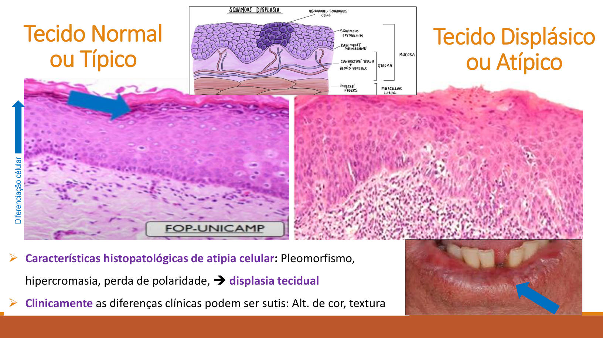
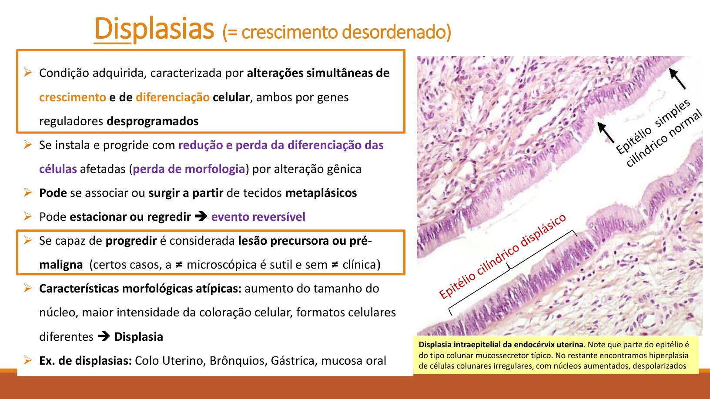
Graus da displasia
Conforme a intensidade das alterações morfológicas, a displasia é graduada em leve, moderada ou severa (ex.: displasia cervical). A displasia severa (ou de alto grau) mostra alterações significativas na forma, aparência e organização, com:
- Atipia citológica
- Células anormais, com manchas escuras e núcleos irregulares, e aumento do número de mitoses (olhar célula por célula).
- Atipia arquitetural
- Aglomeração/sobreposição de células, perda da organização tecidual e perturbação na maturação normal das células (olhar o tecido como um todo).
Quando aparece displasia no laudo — mesmo que só parte do epitélio esteja afetada — deve acender um alerta.
Exemplos de displasia e a queilite actínica
Locais clássicos: colo uterino (mais precisamente o canal endocervical), brônquios, gástrica (numa gastrite, a progressão inflamatória pode chegar a instalar displasia nas células cilíndricas) e mucosa oral.
O exemplo do lábio é didático justamente por ser sutil. Tome o caso do Sr. João, 50 anos, agricultor e tabagista: o lábio está injuriado por dois fatores — o calor do cigarro e a exposição crônica ao sol (lábio inteiro exposto). Esse processo chama-se queilite actínica.
- Queilite actínica
- Lesão realmente precursora de câncer de lábio — uma displasia de lábio que pode progredir. Nem todas progridem; não dá para saber exatamente quando.
Clinicamente, o lábio normal teria cor rosa uniforme. Na queilite actínica falta uniformidade: há áreas mais esbranquiçadas e espessas (por causa do sol) e áreas que afinaram, com erosão / início de úlcera. Ao microscópio: epitélio com pouquíssima queratina (não dá mais tempo de formar), perda de arquitetura, inflamação interna — displasia. Como sempre, há infiltrado inflamatório acompanhando, porque todo processo patológico ativa a resposta imune.
Exemplo clínico
Displasia no colo do útero. A mucosa uterina hígida tem cor de "rosa úmido", quase a cor da bochecha, e uniforme. Quando se vê uma área com perda de uniformidade — partes mais avermelhadas, até sangrantes, e partes mais esbranquiçadas — a biópsia muito provavelmente mostrará displasia moderada ou severa instalada.
O Papanicolau: triagem por citologia esfoliativa
Como o Papanicolau "enxerga" a displasia sem biópsia? Ele se aproveita da fisiologia do epitélio cervical: as células superficiais, já maduras, descamam (esfoliação). Uma escovinha colhe essas células superficiais, e no microscópio o citopatologista procura atipia celular.
- Se houver atipia celular → faz-se biópsia para definir o grau de displasia.
- Se não houver atipia → nem precisa biopsiar, está liberado.
Por isso o Papanicolau é um exame de triagem, não um exame totalmente diagnóstico.
- Citologia esfoliativa
- Análise de células que descamaram naturalmente (esfoliaram) do epitélio, coletadas por escovação — base do Papanicolau.
Não confunda: "atipia celular" não é sinônimo de displasia pronta. A displasia é o início da atipia, que pode progredir até a atipia do câncer. A atipia você vai encontrar em todas as neoplasias malignas — mas não vai encontrar atipia nas benignas. Esse é o divisor de águas que vamos usar o resto da aula: nas descrições, olha-se célula por célula (atipia citológica) e o tecido como um todo (atipia arquitetural).
Neoplasia
Conceito
Neoplasia significa "novo crescimento".
- Neoplasia
- Massa anormal de tecido, com crescimento exacerbado que ultrapassa o do tecido normal e é persistente ao término dos estímulos que o provocaram. É uma proliferação celular anormal e persistente, fruto de reprogramação gênica irreversível (mutação) dos genes promotores de crescimento.
- Autonomia
- A palavra-chave. A partir do momento em que a neoplasia se instala, o crescimento não depende mais de injúria — a célula se reprogramou geneticamente e prolifera sozinha.
Repare na diferença fina entre displasia e neoplasia no nível genético. Na displasia houve desprogramação (bagunçou, mas ainda reversível). Na neoplasia não é só bagunça: houve REprogramação — bagunçou E se estabeleceu um novo controle de crescimento celular, irreversível. Por isso a neoplasia prolifera mesmo depois que o estímulo acabou.
Os genes envolvidos
A neoplasia geralmente compromete genes promotores do crescimento, os proto-oncogenes. Quando estão alterados, há aumento proliferativo e pode formar-se uma neoplasia. Exemplos citados: RAS, BRAF e C-MYC. Além disso, atuam os supressores de tumor — P53 e RB. A proliferação extraordinária ocorre com aumento do metabolismo celular e gasto de energia na região proliferada.
- Proto-oncogenes
- Genes promotores do crescimento (controlam a mitose). Ex.: RAS, BRAF, C-MYC. Quando mutados, levam a aumento proliferativo. O principal exemplo de início de neoplasia é a mutação de um proto-oncogene — mas pode começar por hiperexpressão de algum gene que controla a mitose, ou por outras vias.
- Genes supressores de tumor
- P53 e RB — os "stops" que, quando perdidos, deixam a proliferação correr.
O neoplasma não se sustenta sozinho: parênquima × estroma
A proliferação forma um tumor (neoplasma) com componentes obrigatórios:
- Parênquima tumoral
- As próprias células que proliferam e formam o tumor (as que sofreram a mutação do proto-oncogene).
- Estroma tumoral (estroma de sustentação)
- O tecido que preenche e sustenta o tumor: tecido conjuntivo + vasos neoformados (neoangiogênese) que nutrem o tecido extra que proliferou + células inflamatórias (o sistema imune sempre tenta proteger e reage).
A organização celular e de crescimento de todo esse neoplasma é o que determina sua classificação em benigno ou maligno.
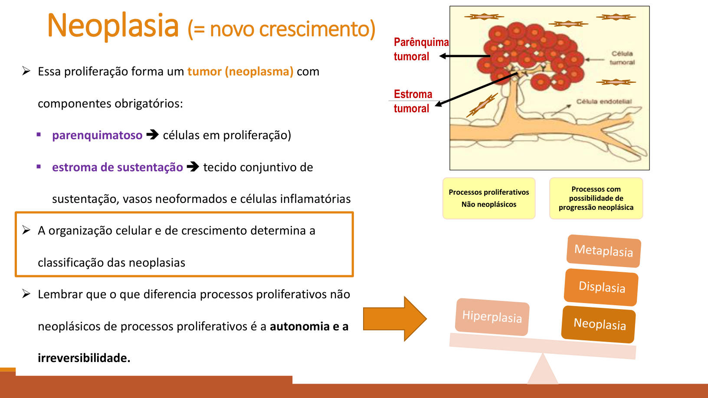
A diferença que separa hiperplasia de neoplasia é uma só palavra: autonomia. Na hiperplasia há um agente causador estimulando a proliferação — ela cresce o tanto que o estímulo permite, e as células são iguais. Na neoplasia não há agente estimulando: ela tem autonomia de crescimento e não para. Na prática, você desconfia: "será que está traumatizando por isso?" — descarta o agente, e mesmo assim continua crescendo. Isso é autonomia. (Ambas, vale dizer, podem ser feitas de células parecidas; o que muda é o controle.)
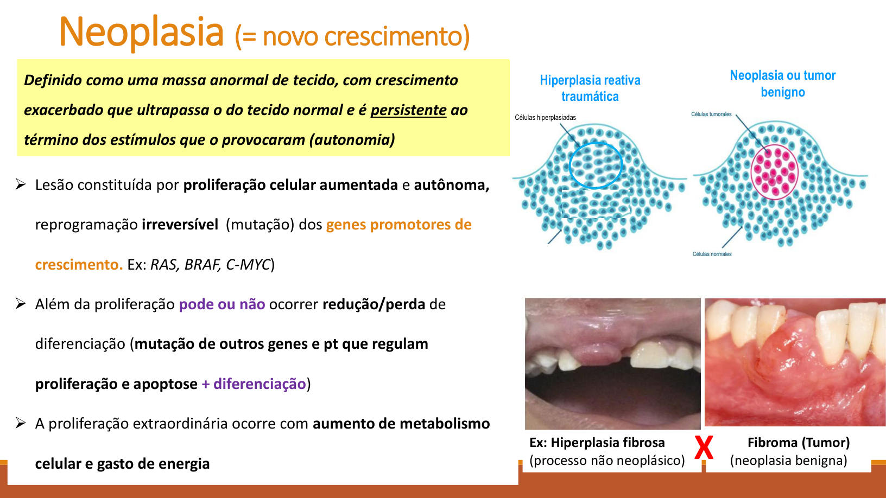
Neoplasia benigna × maligna
O critério que separa as duas
Toda neoplasia é um aumento proliferativo autônomo (já houve mutação de ao menos um gene promotor — RAS, BRAF, C-MYC). O que decide entre benigna e maligna é a diferenciação:
- Neoplasia benigna
- A mutação ficou só no(s) gene(s) promotor(es). O fenótipo da célula se mantém — ela só aumentou em número, mas continua igual às vizinhas. É bem diferenciada e típica (livre de atipias). Aumento proliferativo sem perda de diferenciação.
- Neoplasia maligna
- Além da proliferação, aparecem atipias e perda/redução de diferenciação (proliferação de células totalmente mutadas). Aumento proliferativo COM perda de diferenciação.
Para iniciar uma neoplasia basta a mutação de um proto-oncogene → proliferação. Para iniciar o câncer, não basta um proto-oncogene: é preciso um processo acumulativo de várias mutações em sequência (um ou mais proto-oncogenes + supressor de tumor + algum gene de diferenciação). Pense sempre em acúmulo, não em mutação única.
Câncer ≠ apenas "tumor": a nomenclatura
Neoplasia é sinônimo de tumor. Assim como há neoplasia benigna e maligna, há tumor benigno e maligno. Logo, dizer "tumor" não significa câncer — câncer é a neoplasia maligna. Todo câncer é neoplasia, mas nem toda neoplasia é câncer; toda neoplasia pode ser chamada de tumor.
- Câncer / cancro / caranguejo
- "Câncer" vem do latim cancro = caranguejo. O patologista que estudou o câncer de mama percebeu que a proliferação se enraizava na mama "como pezinhos de caranguejo entrando no tecido" — daí o nome. Em grego, tumor é oncos (origem de "oncologia").
Neoplasia benigna — aspectos morfológicos
Macroscopicamente, na grande maioria é possível atribuir critérios anatômicos e clínicos que caracterizam o tumor como benigno, porque ele mantém a diferenciação e a funcionalidade: aspecto semelhante ao tecido de origem, crescimento lento, totalmente circunscrito, sem invasão local ou à distância.
Microscopicamente: células parenquimatosas bem diferenciadas e maduras (mantêm a morfologia do tecido de origem), sem atipias, taxa mitótica baixa, discreta neoangiogênese e infiltrado inflamatório crônico. Em resumo: tecido neoplásico com morfologia igual ao tecido de origem, sem cariomegalia, sem hipercromasia, sem pleomorfismo — ou seja, ausência de displasia tecidual.
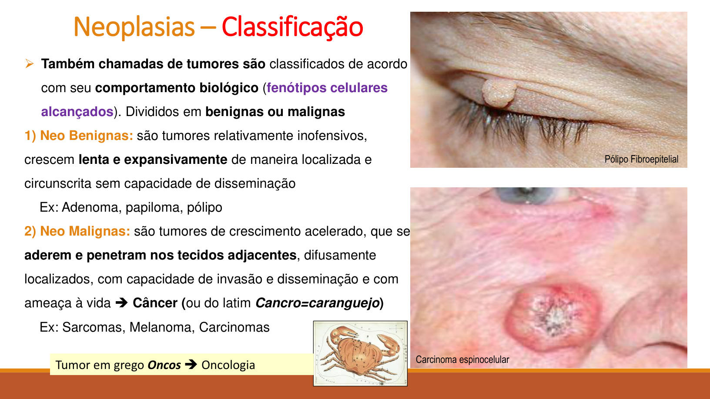
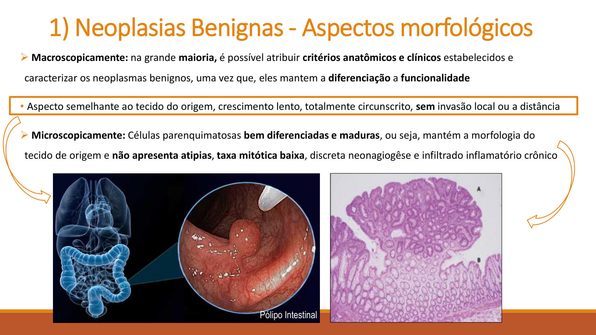
Benigno pode ser sintomático — três exemplos importantes
"Benigno" não significa "sem consequências". Casos citados:
- Leiomioma (tumor benigno de músculo, no útero): em cavidade com espaço para crescer, pode chegar a 10–15 cm e provocar sangramento.
- Adenoma tireoideano funcional (e outras neoplasias benignas de órgãos endócrinos): podem ser funcionais — aumentam a produção de hormônio e provocam alterações sistêmicas (hipersecreção), embora não sejam câncer.
- Cápsula / pseudocápsula: tumores benignos sólidos costumam apresentar cápsula conjuntiva ou pseudocápsula que os delimita (vantagem cirúrgica). Isso acontece porque a resposta inflamatória lenta forma tecido conjuntivo ao redor, "isolando" o tumor como se fosse corpo estranho.
Exemplo clínico
Fibroadenoma de mama — a neoplasia benigna mais comum da mama (muitas mulheres têm sem saber). Sequência de laudo:
- Descrição clínica: massa palpável bem delimitada, de consistência fibroelástica (não é dura).
- Descrição macroscópica: tumor nodular pequeno, fibroelástico, encapsulado, de coloração amarelada pálida, nitidamente delimitado. (Descrição macroscópica é a descrição do tecido da amostra — a fresco ou já fixada em formol.)
- Descrição microscópica: proliferação do estroma mamário intralobular, distorcendo as glândulas; cápsula fibrosa delimitando o tumor; ausência de sinais de malignidade. As células são semelhantes a fibroblastos, proliferadas e produzindo matriz conjuntiva.
- Conclusão: fibroadenoma de mama.
O fibroadenoma ensina algo importante: nem toda neoplasia é de epitélio. Aqui quem prolifera é o tecido conjuntivo (os fibroblastos do estroma entre os ácinos e ductos) — outros tecidos, além do epitélio, também podem sofrer a mesma reprogramação gênica.
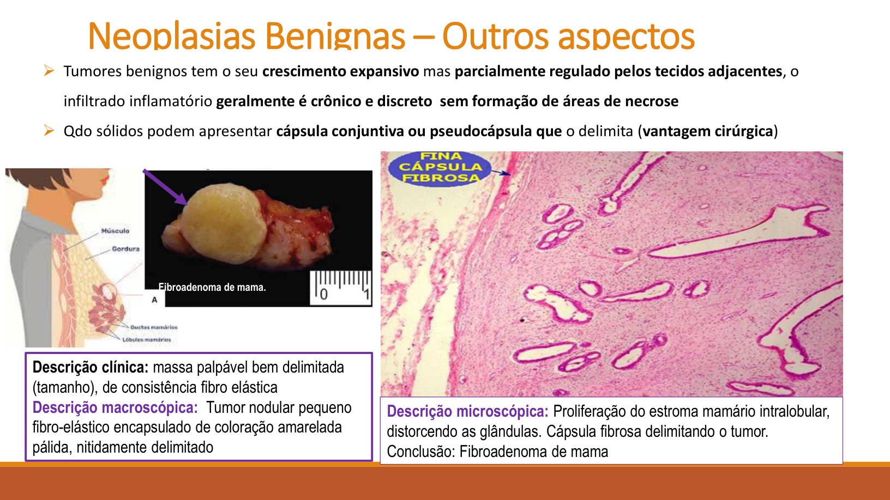
Neoplasia maligna — aspectos morfológicos
As neoplasias malignas são proliferações descontroladas e irreversíveis, caracterizadas por ampla variação na diferenciação das células parenquimatosas. A definição-resumo do câncer: descontrole irreversível de crescimento + displasia, por alteração de vários genes de ambos os grupos reguladores. "Variação de diferenciação" significa que, além das atipias, começa a aparecer desdiferenciação celular — células imaturas acompanhando a neoplasia.
Um jeito limpo de definir câncer agora que você sabe o que é displasia: câncer = neoplasia COM displasia. A neoplasia maligna sempre tem displasia ativa (perda de diferenciação). A benigna nunca tem — por isso nem faz sentido perguntar se uma benigna é "bem diferenciada": toda neoplasia benigna é, por definição, diferenciada.
Por que aparece necrose no câncer
Lembre dos componentes do neoplasma: parênquima + estroma (com os neovasos). Num pólipo pequeno, é fácil ramificar um vasinho e nutri-lo — nunca falta nutrição. Já num tumor maligno de crescimento rápido, os neovasos não conseguem proliferar na velocidade do parênquima. Resultado: hipóxia no meio da lesão e áreas de necrose. Por isso necrose, via de regra, está presente em proliferações malignas (a úlcera central do carcinoma de pele é exatamente isso).
Maligna — apresentação clínica e macroscópica
É o oposto da benigna. Clinicamente: crescimento e expansão rápidos; difícil delimitação; associadas a déficit energético (cresce rápido, aumenta a demanda, o corpo não supre — daí emagrecimento/comprometimento), comprometimento sistêmico e risco de morte. Macroscopicamente: tumores que proliferam rápido, invadem tecidos adjacentes, de difícil delimitação, com aspecto irregular — nódulos espiculados (irregulares) e úlceras crônicas também irregulares (diferente da afta, que é redondinha e bem delimitada).
O macete da palpação da mama. No fibroadenoma (benigno) você sente um nódulo bem delimitado, móvel e fibroelástico — dá para "isolá-lo". No câncer, o nódulo é endurecido e, quando você tenta delimitar, a mama inteira se mexe, porque ele tem proliferações adjacentes laterais. Esse "a mama inteira vem junto" é sinal sugestivo de malignidade.
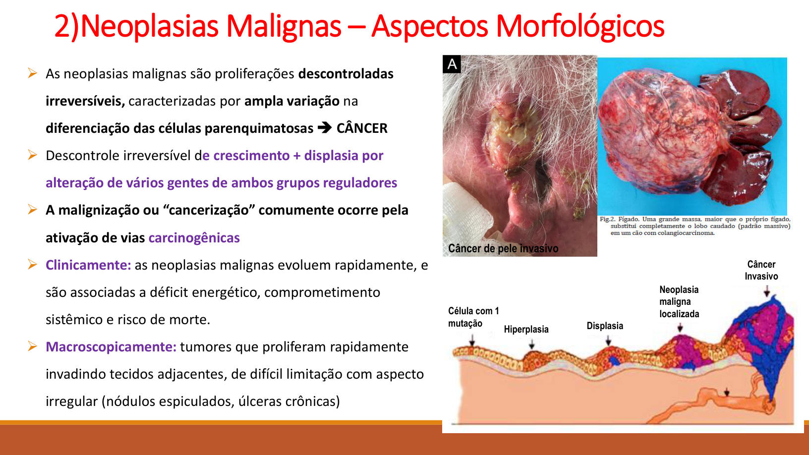
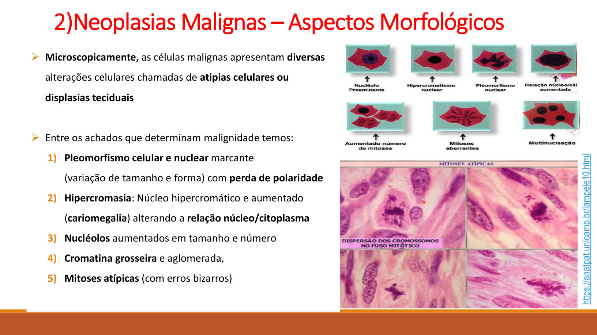
As atipias da maligna em detalhe
Na displasia o patologista às vezes fica em dúvida; na neoplasia maligna as atipias são muito mais intensas e claras. Os achados:
- Pleomorfismo celular e nuclear marcante
- Variação de tamanho e forma — a célula programada para ser, por exemplo, pavimentosa epitelial, adquire formatos diversos.
- Perda de polaridade
- Nuclear e arquitetural.
- Hipercromasia / cariomegalia
- Núcleos hipercromáticos e aumentados.
- Perda da relação núcleo/citoplasma
- O núcleo, que ocupava ~1/3 da célula, passa a ocupar quase a célula inteira.
- Nucléolos aumentados
- Em tamanho e número (às vezes mais de um nucléolo), sinal de aumento de síntese proteica para sustentar a proliferação rápida.
- Cromatina grosseira
- Aglomerada, dando aspecto desordenado.
- Mitoses atípicas / bizarras
- Em tecido normal é raro flagrar mitose; no tecido maligno é comum, porque ela acontece tantas vezes. Quando desarranjadas, aparecem no laudo como "mitoses bizarras".
O macete da "célula vida louca". A célula maligna é como aquela pessoa que não respeita regras: não respeita o padrão fenotípico para o qual foi programada, se diferencia em qualquer formato, cresce sem parar e não respeita limites. Os fatores de supressão que todos os tecidos têm? Esqueça — a neoplasia maligna não tem mais esses controles. Essa imagem ajuda a memorizar todas as atipias de uma vez.
Graduação histológica (G1–G4)
O que é graduar e por que importa
A avaliação de uma neoplasia maligna usa critérios anatomopatológicos com valor prognóstico, que ajudam a escolher a estratégia terapêutica. Dois sistemas são essenciais: (1) graduação/gradação histológica e (2) estadiamento clínico do câncer. Hoje veremos a graduação; o estadiamento completo é o próximo passo (ver Aula 03).
A desdiferenciação maligna é progressiva: a neoplasia pode começar bem diferenciada e, ao acumular mutações, ir perdendo semelhança com o tecido de origem.
A escala G1 a G4
- Grau 1 — bem diferenciado
- Morfológica e funcionalmente semelhante ao tecido de origem. Já é câncer (tem atipias que confirmam malignidade), mas ainda lembra o tecido maduro, mantém a função e tem menor impacto sistêmico/clínico.
- Grau 2 — moderadamente diferenciado
- Leves diferenças morfológicas e funcionais em relação ao tecido de origem.
- Graus 3 e 4 — mal ou pouco diferenciado / indiferenciado
- Morfológica e funcionalmente muito diferente do tecido de origem (células indiferenciadas, de aspecto ~mesenquimal). É a anaplasia.
- Anaplasia
- Grau máximo de indiferenciação: o tecido está tão indiferente que não se consegue caracterizar de qual tecido se originou. "Anaplásico" = não dá para classificar em nenhum outro.
O ponto que mais confunde no laudo: bem diferenciado é o de MELHOR prognóstico; mal diferenciado é o PIOR. Por quê? No bem diferenciado ainda conhecemos um pouco do comportamento da célula — o exemplo é o câncer de mama HER2: por manter a superexpressão do HER2, conseguimos bloquear esse receptor e tratar. Já o mal diferenciado perdeu totalmente a diferenciação, prolifera agressivamente e fugiu do nosso controle. Não inverta isso na prova.
Agressividade depende também do tecido de origem
Por que alguns órgãos têm cânceres que "já nascem" agressivos, como o gástrico? Porque, em tecidos cuja célula original já tem alta velocidade proliferativa, a célula se indiferencia rapidamente. É diferente a progressão de um câncer de pele em 5 anos da de um câncer gástrico em 2 anos — o gástrico é mais agressivo. À medida que se perde diferenciação, aumentam as atipias (graus de atipia).
Termos da graduação: pleomorfismo, anisocitose, anisocariose
- Pleomorfismo
- A heterogeneidade das células neoplásicas — comum em cânceres anaplásicos e muito discreto nos bem diferenciados.
- Anisocitose
- Variação na forma e no tamanho das células.
- Anisocariose
- Variação na forma e no tamanho dos núcleos.
O crescimento rápido pode ser inferido pela taxa de mitose e pela presença de mitoses bizarras (ex.: metáfases/anáfases tripolares).
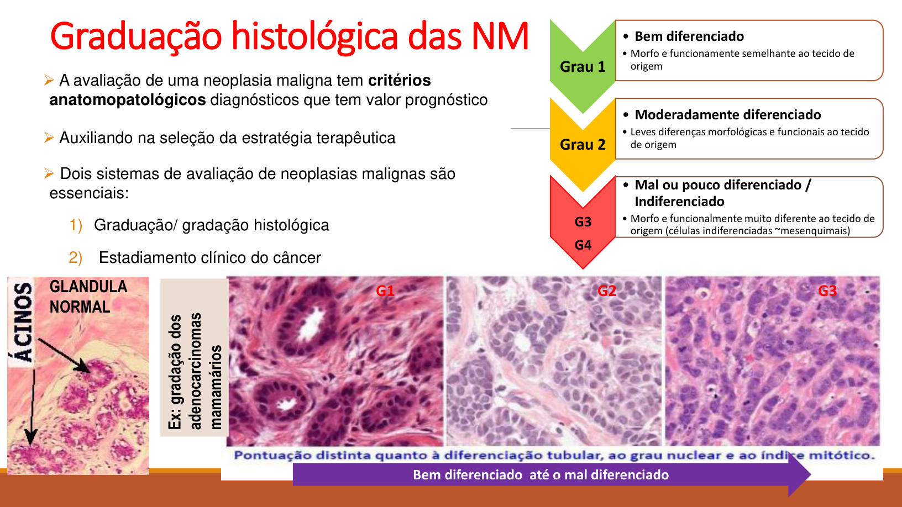
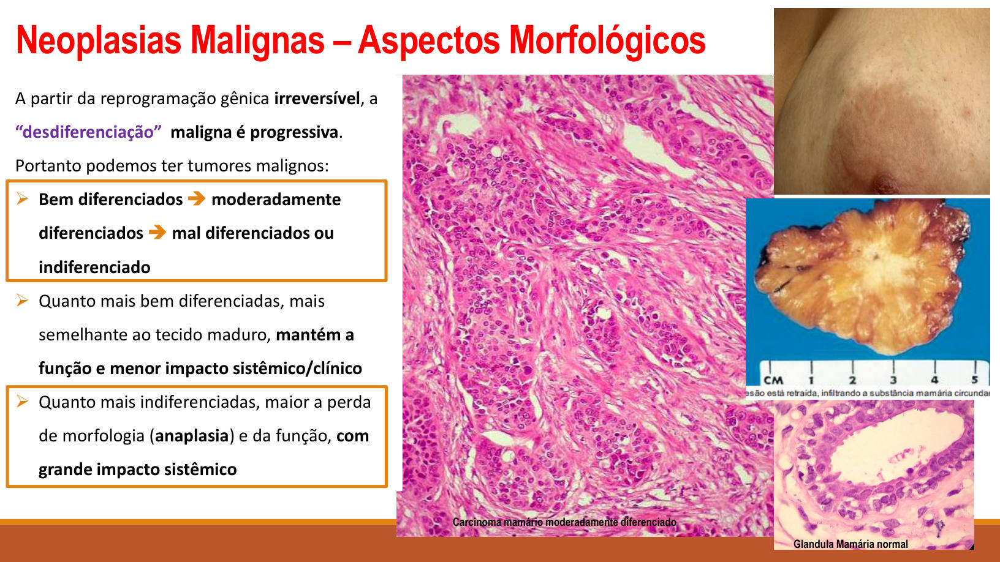
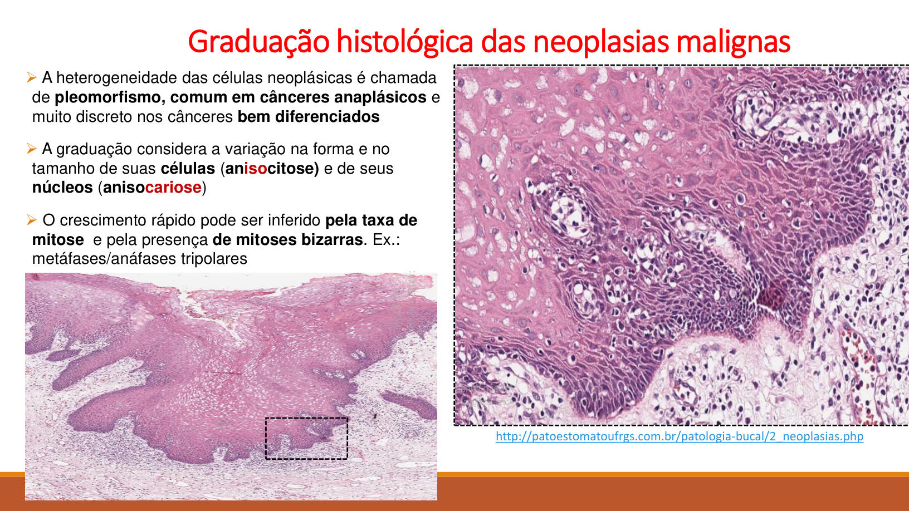
Outros critérios da graduação: invasão e infiltrado
A graduação também avalia o grau de invasão local — indicador prognóstico de metástase:
- In situ × invasivo
- A fronteira, em epitélios, é a membrana basal. Se a proliferação desordenada (pleomorfismo, hipercromasia, atipias) está presente mas a membrana basal está íntegra → carcinoma in situ. Se há áreas que permitiram a migração das células tumorais para além dela → carcinoma invasivo.
- Invasão perineural
- Células cancerosas ligadas a, ou dentro de, um nervo — outro critério prognóstico.
- Infiltrado inflamatório linfocítico / linfoplasmocitário
- Junto com congestão e neoangiogênese, é proporcional à graduação e agressividade. O linfócito não está ali à toa: está reagindo para tentar conter a invasão do câncer — por isso o infiltrado também ajuda a guiar o diagnóstico.
Tudo isso compõe os laudos e é preditivo de comportamento mais ou menos agressivo.
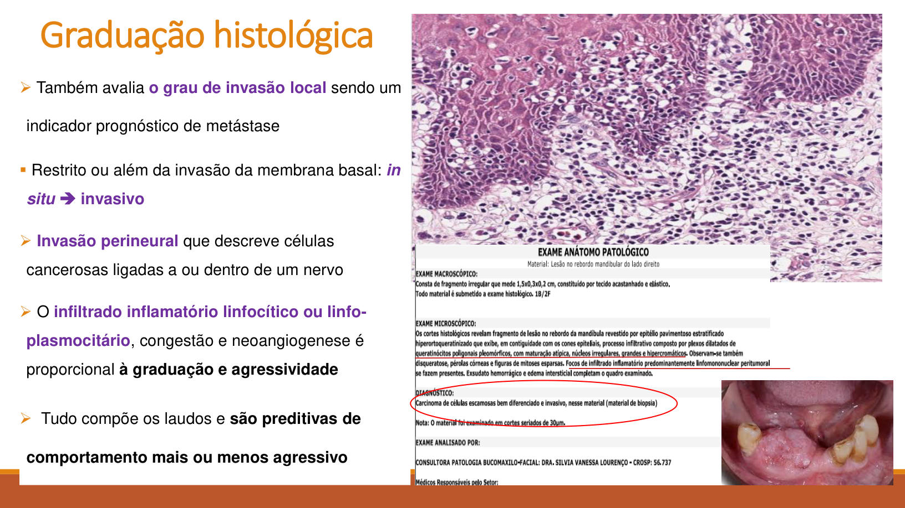
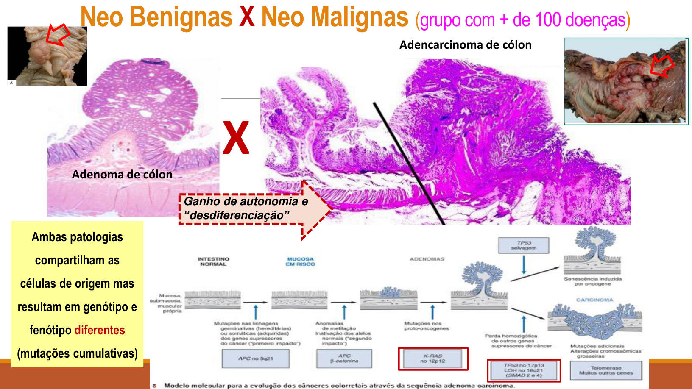
Exemplo clínico
Laudo de carcinoma de células escamosas bem diferenciado e invasivo (biópsia de rebordo da mandíbula).
- Exame macroscópico: fragmento irregular medindo 1,5 × 0,3 × 0,2 cm, constituído por tecido acastanhado e elástico; todo o material submetido a exame histológico. (Repare que a consistência sempre vem descrita — aqui "acastanhado e elástico".)
- Exame microscópico: fragmento de lesão no rebordo da mandíbula revestido por epitélio pavimentoso estratificado, hiperqueratinizado, que exibe processo infiltrativo composto por queratinócitos poligonais pleomórficos, com maturação atípica, núcleos irregulares, grandes e hipercromáticos (cariomegalia). Observam-se disqueratose, pérolas córneas e figuras de mitose esparsas. Há focos de infiltrado inflamatório predominantemente linfomononuclear peritumoral; exsudato hemorrágico e edema completam o quadro.
- Diagnóstico: carcinoma de células escamosas bem diferenciado e invasivo.
- Disqueratose
- Dis = desordem, queratose = queratina. Falhas na formação de queratina.
- Pérolas córneas
- Falhas de queratina organizadas em "pérolas" — achado bem típico de carcinoma (de células escamosas).
A regra de ouro da leitura de laudos: sempre leia o descritivo E a conclusão, e confira se batem. Estamos na era do "Ctrl C / Ctrl V" — já apareceu conclusão "benigno" com descritivo cheio de atipia, pleomorfismo e hipercromasia. Isso é incoerente: você NÃO encontra atipia/pleomorfismo no laudo de uma neoplasia benigna. Se ver isso, peça gentilmente a revisão da lâmina — tem algo errado ali.
Neoplasias hematológicas
Câncer no sangue: os mesmos critérios
As neoplasias hematológicas malignas mais comuns são as leucocitárias (das células-tronco hematopoiéticas, linfócitos, plasmócitos) — as leucemias. Os critérios diagnósticos baseiam-se em achados morfológicos e moleculares, por causa da grande diversidade de comportamentos.
Importante: nem todo câncer passa por uma via carcinogênica clássica. Nas leucemias, por exemplo, pode ocorrer uma mutação esporádica/aleatória no cromossomo (rearranjos gênicos e substituições pontuais) que altera um gene de diferenciação das células sanguíneas — sem ativar as vias carcinogênicas habituais. Mesmo assim, as células neoplásicas também apresentam atipias.
- Leucemias agudas
- Proliferações neoplásicas de células hematopoiéticas imaturas (blastos).
- LLA
- Leucemia (linfoblástica) aguda. As mutações condutoras mais comuns são rearranjos gênicos e substituições pontuais que regulam a diferenciação das células-tronco hematopoiéticas.
Exemplo clínico
Mielograma compatível com leucemia linfoblástica aguda. O mielograma é uma citologia da medula óssea vermelha: células hematopoiéticas são aspiradas e colocadas em lâmina para procurar proliferação maligna.
- Celularidade: medula acentuadamente hipercelular; cerca de 96% das células nucleadas são blastos agranulares, geralmente de pequeno tamanho, com alta relação núcleo/citoplasma e nucléolos evidentes.
- Conclusão: achados morfológicos compatíveis com leucemia linfoblástica aguda.
O que chama a atenção: ter 96% de células imaturas (blastos) já é alteração — não era para ser tudo imaturo. O tamanho pequeno também é atípico para o blasto (que costuma ser maior). A alta relação núcleo/citoplasma repete o conceito de sempre: onde o núcleo era ~1/3 da célula, agora ocupa quase a célula inteira. E os nucléolos evidentes indicam metabolismo celular aumentado — mais um sinal de atipia. Ou seja: os cânceres hematopoéticos usam os mesmos critérios de atipia que os tumores sólidos, apenas adaptados ao que é "normal" para a célula blástica.
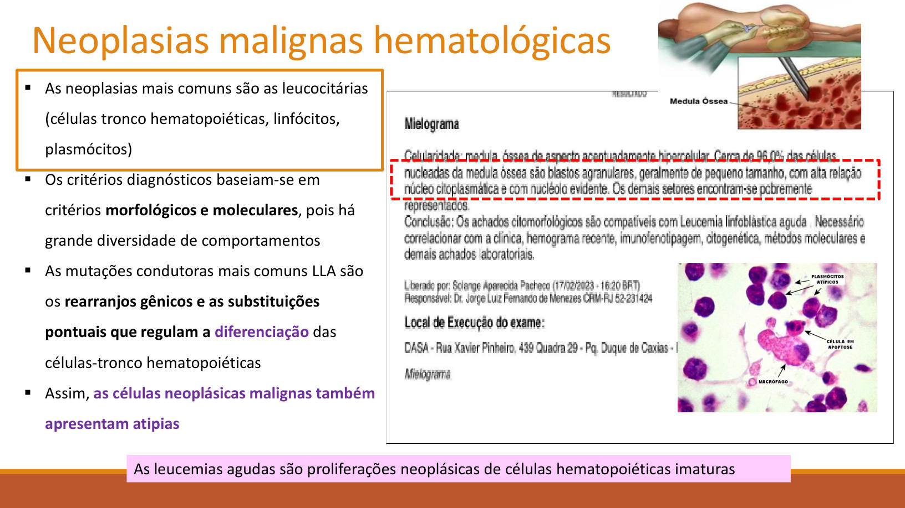
Conexões
Esta aula é a base de tudo o que vem a seguir. A graduação histológica que vimos aqui é apenas um dos dois sistemas de avaliação da neoplasia maligna — o outro, o estadiamento clínico do câncer, será detalhado na Aula 02, que retoma a fronteira in situ × invasivo, a invasão da membrana basal e a relação com a possibilidade de metástase. A carcinogênese (agentes químicos, físicos e biológicos, alterações cromossômicas e o caráter acumulativo das mutações) e as sequências de mutações por tecido (ex.: RAS → pólipo benigno; ou RAS + P53 mutado → adenocarcinoma de cólon) conectam esta aula à discussão de mecanismos moleculares aprofundados na Aula 03. Também ficam pendentes para as próximas aulas os critérios exatos de quando classificar a displasia como leve, moderada ou severa.
- → Diferenciação = especialização. Proliferação e diferenciação são inversamente proporcionais: célula jovem/tronco prolifera muito e é pouco diferenciada; célula madura prolifera pouco e é bem diferenciada (pele: tronco na camada basal; intestino: tronco no meio das criptas).
- → O controle é uma balança entre fatores proliferativos (proto-oncogenes, fatores de crescimento como HER2) e supressores (P53, RB, inibição por contato). HER2 superexpresso = câncer de mama tratável com trastuzumabe.
- → Displasia = crescimento desordenado COM mudança de fenótipo; desprogramação gênica reversível; lesão precursora/pré-maligna. Atipias: cariomegalia, hipercromasia, pleomorfismo, perda de polaridade nuclear e arquitetural. Papanicolau = triagem por citologia esfoliativa.
- → Neoplasia = proliferação anormal, persistente e autônoma; reprogramação gênica irreversível de proto-oncogenes (RAS, BRAF, C-MYC) e supressores (P53, RB). Neoplasia × hiperplasia: a diferença é a autonomia. Neoplasma = parênquima + estroma (conjuntivo + neovasos + inflamatórias).
- → Benigna: bem diferenciada, sem atipias, mantém função, cápsula/pseudocápsula, crescimento lento e circunscrito, sem invasão (ex.: pólipo, fibroadenoma de mama, leiomioma, adenoma tireoideano funcional).
- → Maligna (câncer) = neoplasia COM displasia; descontrole irreversível + atipias marcantes, mitoses bizarras, invasão e necrose (neovasos insuficientes). Câncer = cancro = caranguejo; tumor em grego = oncos.
- → Graduação G1–G4: bem / moderadamente / mal diferenciado / indiferenciado (anaplásico). Bem diferenciado = melhor prognóstico (ex.: HER2); mal diferenciado = mais agressivo. Avalia também in situ × invasivo (membrana basal), invasão perineural, anisocitose/anisocariose e infiltrado inflamatório.
- → Leucemias agudas (LLA) = proliferação de células hematopoiéticas imaturas (blastos), com alta relação núcleo/citoplasma e nucléolos evidentes — os mesmos critérios de atipia, aplicados ao sangue. Regra prática: nunca há atipia em laudo de neoplasia benigna; descritivo e conclusão devem ser coerentes.
Métodos diagnósticos e Nomenclatura
Do "vi a bolota" ao diagnóstico de certeza
Imagine que um paciente chega ao consultório com uma "bolota" — uma proliferação visível. A grande pergunta do clínico é: isso é benigno ou maligno? E, principalmente: como provar? Esta aula percorre exatamente esse caminho investigativo, do primeiro toque na lesão até o laudo que "bate o martelo". A lógica é progressiva: começamos com impressões clínicas, partimos para exames complementares e só fechamos o diagnóstico com o exame que realmente importa — a biópsia. O recado central do professor é desmistificar e parar de confundir os métodos: punção por agulha fina não é a mesma coisa que biópsia, citologia não é a mesma coisa que histopatologia, e nem toda lesão proliferada é câncer.
Antes mesmo de tocar na lesão, o raciocínio começa pela epidemiologia: alguns cânceres acometem mais determinadas faixas etárias, outros têm preferência por sexo, e os hábitos e a exposição a fatores carcinogênicos ajudam a levantar a hipótese diagnóstica. Esses dados orientam, mas não confirmam nada — apenas afinam a suspeita antes de partir para o exame propriamente dito.
Exame clínico — o que os olhos e as mãos contam
Exame visual e tátil
O exame clínico tem dois componentes que andam juntos:
- Visual — o examinador avalia se a lesão se parece com o tecido de origem. Em uma neoplasia, geralmente a resposta é "não, está diferente". Avalia-se alteração de coloração, forma e contorno (regular x irregular, semelhante ou não ao tecido normal).
- Tátil (palpação) — aqui o clínico verifica se a lesão está bem definida (bordas regulares ou irregulares), se é endurecida ou amolecida, ou seja, sua consistência, além de avaliar alterações de função.
As propriedades morfológicas e biológicas captadas nesse exame já auxiliam a discriminar entre lesões benignas e malignas. Bordas regulares, lesão bem delimitada e semelhança com o tecido normal apontam para benignidade; contorno irregular, lesão mal definida e consistência endurecida levantam a suspeita de malignidade.
Lesões "limítrofes" (borderline)
Nem sempre o quadro é claro. Em alguns casos, o aspecto microscópico ou a insuficiência de dados não permite cravar benignidade ou malignidade. Essas lesões recebem a denominação de "limítrofes" (do inglês, borderline) — um território cinzento que exige investigação adicional.
O macete do exame clínico é uma pergunta só: "Parece com o tecido de origem?" Se não parece, já desconfie. E na palpação, lembre da tríade: está bem definido? Tem bordas regulares? É endurecido? Essas três perguntas resumem a primeira triagem entre benigno e maligno antes de qualquer exame caro.
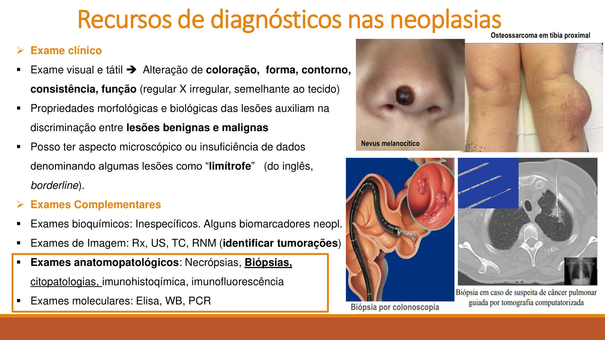
Exames complementares — afinando a hipótese
A partir das primeiras impressões do exame clínico, parte-se para os exames complementares. Eles se organizam em grupos:
- Exames bioquímicos
- São inespecíficos. O exame de sangue, por si só, geralmente não dá o diagnóstico de neoplasia — existem apenas alguns raros biomarcadores neoplásicos. A exceção lógica: se a neoplasia for de células sanguíneas (por exemplo, uma leucemia), o exame de sangue ajuda diretamente.
- Exames de imagem
- Usados para identificar tumorações, sobretudo quando a lesão é interna/submucosa e não pode ser vista ou palpada diretamente. As principais modalidades são RX (raio X), US (ultrassom), TC (tomografia computadorizada) e RNM (ressonância nuclear magnética). Como regra prática do professor: o raio X serve bem para tecido ósseo, e a ressonância para tecido mole.
- Exames moleculares
- Técnicas que detectam moléculas/proteínas/ácidos nucleicos específicos: ELISA, WB (Western Blot) e PCR.
- Exames anatomopatológicos
- O núcleo do diagnóstico. Incluem necrópsias, biópsias, citopatologias, imuno-histoquímica e imunofluorescência — detalhados nas seções seguintes.
"Para bater o martelo, está chegando essa parte." Os exames complementares de imagem e laboratoriais iniciam a investigação e localizam a lesão, mas não fecham o diagnóstico de neoplasia. Quem bate o martelo é a biópsia.
Necrópsia x Biópsia — tecido morto x tecido vivo
Antes de detalhar a biópsia, é fundamental separá-la do exame em tecido morto, porque essa distinção define o que cada um consegue responder.
- Necrópsia (ou autópsia)
- Exame sistematizado de um organismo realizado pós-morte, com a finalidade de estabelecer a presença e o percurso de doenças e as causas relacionadas à morte. É o recurso utilizado nos Serviços de Verificação de Óbito, a partir do exame clínico macroscópico de todos os órgãos e, quando necessário, microscópico. Exemplo do professor: um paciente com várias comorbidades dá entrada na UPA e falece antes de qualquer exame ser realizado — sem dados em mãos, encaminha-se ao serviço de medicina legal para uma coleta sistematizada e análise macroscópica que tente delinear o que levou ao óbito.
- Biópsia
- Exame anatomopatológico (AP) propriamente dito, realizado em fragmentos de tecidos VIVOS. É o padrão-ouro de diagnóstico das neoplasias. Pego uma amostra que pode ser um pedacinho (incisional) ou a lesão inteira (excisional), fixo e analiso ao microscópio.
A diferença essencial: biópsia = tecido vivo; necrópsia = tecido pós-morte. Saber que a biópsia trabalha com tecido vivo explica o cuidado da fixação (veja adiante) — se o fragmento ficar exposto, ele morre e se decompõe.
"Eu preciso do anatomopatológico." Dentro da Patologia, a biópsia é o padrão-ouro — nenhum exame de imagem ou de sangue substitui a análise histológica de um fragmento vivo da lesão.
Tipos de biópsia — incisional x excisional
Existem dois tipos fundamentais de biópsia, e a escolha depende de dois fatores: o tamanho da lesão e a hipótese diagnóstica (benigna ou maligna).
- Biópsia incisional
- Remoção parcial da lesão — apenas um fragmento. Indicada para lesões grandes ou com suspeita de malignidade. Tem finalidade apenas diagnóstica. O raciocínio: se a suspeita é de malignidade (câncer), o tratamento não termina ali — quem trata é o oncologista, não o ambulatório de uma UBS. No máximo, confirma-se o diagnóstico por um fragmento. Por isso, via de regra, diante de suspeita de malignidade, a biópsia é incisional, para diagnóstico.
- Biópsia excisional
- Remoção total da lesão. Indicada para lesões pequenas e com hipótese de benignidade. Tem finalidade diagnóstica E terapêutica — ao retirar tudo de uma vez, já trato o paciente. O exemplo do professor: uma lesão pediculada, bem delimitada, com base estreita e tecido semelhante ao tecido palatino, fortemente sugestiva de benignidade. Não faz sentido tirar um pedacinho para confirmar e depois anestesiar de novo para retirar o resto — retira-se inteiro de uma vez.
Em resumo: incisional → suspeita de malignidade → só diagnóstico; excisional → lesão pequena e benigna → diagnóstico + terapêutico. A incisional geralmente NÃO se faz para lesão benigna, pois isso obrigaria a um segundo procedimento (retratamento) para algo que já se suspeitava benigno.
Biópsia por congelação transoperatória
Entre os recursos AP de diagnóstico das neoplasias, há ainda as biópsias por congelação transoperatórias — realizadas durante a própria cirurgia, congelando o fragmento para análise rápida e orientando a conduta cirúrgica em tempo real.
Pense assim: "tenho biópsias de diagnóstico (incisional) e biópsias de diagnóstico E terapêutica (excisional)". A pergunta que decide é dupla — qual o tamanho? qual a hipótese? Suspeita de câncer + lesão grande = pedacinho (incisional). Lesão pequena + cara de benigna = tira tudo (excisional).
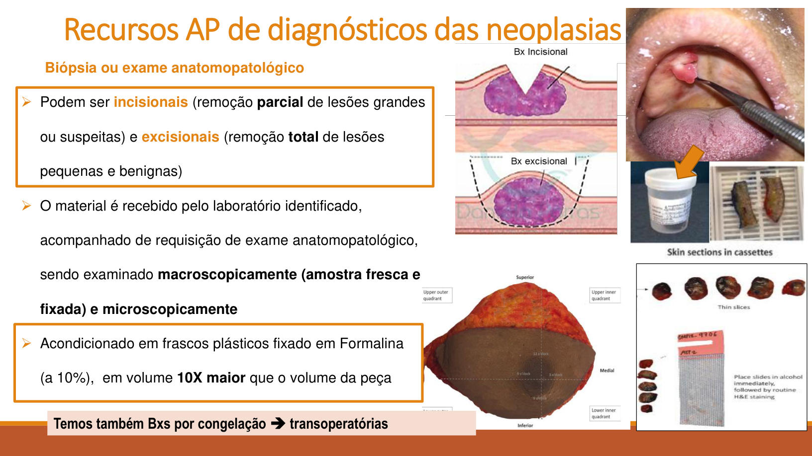
Formas de coleta da biópsia
O fragmento de tecido vivo pode ser obtido de várias maneiras:
- Incisão direta
- Acesso direto à lesão para remover o fragmento. Pode usar bisturi ou o punch — um aparelhinho prático que, com um movimento de girar, penetra na pele e permite cortar a base de um fragmento cilíndrico.
- Incisão indireta (endoscópica/colonoscópica)
- Acesso por uma cânula com fibra que leva uma pinça até a lesão interna. Pela colonoscopia faz-se a biópsia (inclusive excisional) de pólipos; pela endoscopia, remoção de fragmentos gástricos e esofágicos.
- Punção por agulha grossa (core biopsy)
- Uma agulha em forma de cilindro que entra aberta, fecha no meio da lesão e captura um fragmento de tecido. É aceita, por exemplo, para biópsias pulmonares. Como puxa tecido, é biópsia.
- Peças cirúrgicas completas
- Órgãos inteiros ou grandes peças removidas cirurgicamente também vão para a biópsia. Exemplos: mastectomia (a mama removida) e esofagectomia.
O ponto que mais confunde: PAAF x core biopsy
A PAAF (punção aspirativa por agulha fina) usa uma agulha fina que puxa CÉLULAS, não tecido. Por isso, PAAF NÃO é biópsia — é citologia (citologia aspirativa). Já a core biopsy (agulha grossa) puxa um fragmento de TECIDO, e por isso é biópsia. A regra de ouro: se puxa células → citologia; se puxa tecido → biópsia.
"Não confundir biópsia por punção por agulha grossa (core) com a PAAF." A diferença não é o fato de ser agulha — é O QUE a agulha traz: a fina aspira células (citologia), a grossa arranca um cilindro de tecido (biópsia).
Processamento da biópsia — fixação, margens e colorações
Fixação
O fragmento de tecido NÃO vai direto para a lâmina (isso é o que se faz com as citologias). Se for direto, o tecido morre e se decompõe (necrosa). Por isso é preciso fixar: colocar o tecido numa solução que mantém o máximo possível da estrutura, sem proteólise nem degradação.
- O líquido fixador é o formol / formalina a 10%. Não adianta colocar no soro nem no álcool — tem que ser formol 10%, e isso deve existir em qualquer serviço de saúde.
- O volume da solução deve ser 10x maior que o volume da peça. "Não adianta colocar uma uva num frasquinho do tamanho da uva" — não fixa, e o material fica inanalisável ao microscópio.
Depois de fixado e identificado, o material vai ao laboratório, onde é fragmentado, cortado em fatias finíssimas, corado e finalmente visualizado ao microscópio.
Pesquisa de margens (pintura com nanquim)
Em casos de hipóteses diagnósticas (HDs) malignas, há necessidade de pesquisa de comprometimento das margens. Mesmo numa excisional sem suspeita maligna, a lesão pode acabar sendo maligna (raro, mas possível). Por isso o laudo informa se a margem está livre ou comprometida pela neoplasia.
Como se faz? Literalmente pintando as margens com tinta nanquim assim que o material chega ao laboratório. A tinta fica preta e não sai por nada — ao microscópio, a margem é justamente a parte pintada de preto. Olha-se então se há células neoplásicas tocando essa borda: margens livres (a lesão foi removida com folga) ou margens comprometidas (tumor chega até a borda da peça).
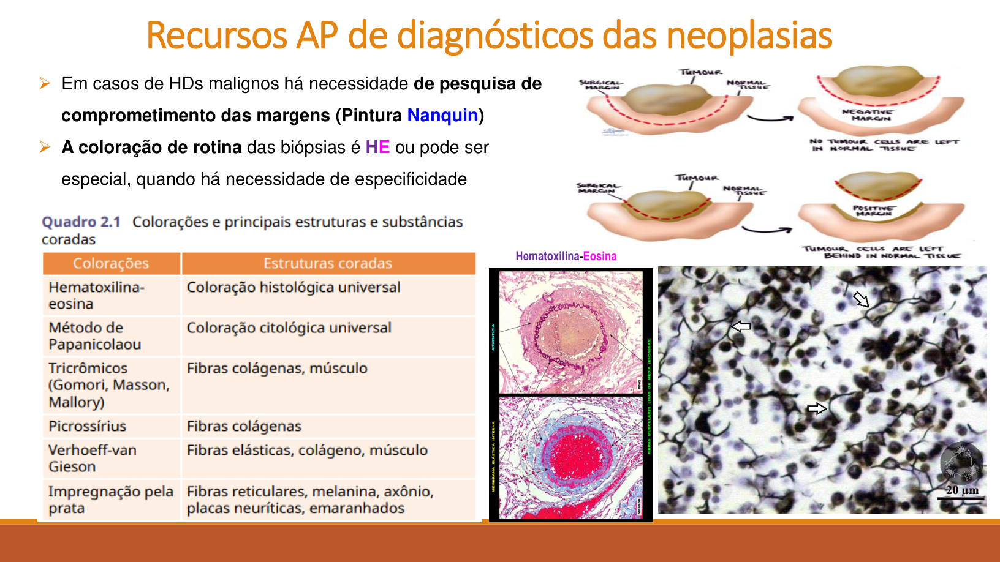
Colorações
Nem tudo é fácil de ver na coloração comum. A coloração de rotina é a HE (Hematoxilina-Eosina) — roxo e rosa — usada em cerca de 98% das lâminas que você receberá. Quando se precisa de mais especificidade, entram as colorações especiais:
- Tricrômico
- Para corar melhor as fibras colágenas.
- Verhoeff / Weigert
- Para corar fibras elásticas.
- Prata
- Para corar melanina, axônio e placas neuríticas.
Hoje, com convênios, às vezes o próprio patologista sugere uma coloração adicional para complementar o diagnóstico.
Citologia / citopatologia — o exame de triagem
A citologia auxilia no diagnóstico, mas não o define. É um exame de rastreio/triagem, não diagnóstico definitivo.
- Citologia / citopatologia
- Estuda alterações morfológicas em esfregaços ou centrifugados celulares, a partir de material das regiões alteradas. Trabalha com células soltas colocadas na lâmina — não com tecido.
- Citologia esfoliativa
- Obtida por raspado/esfoliação. Exemplo clássico: o Papanicolau (citologia cervical), em que se raspam as células do colo do útero. Também é possível raspar células de outros tecidos.
- Citologia aspirativa (PAAF)
- Obtida por aspiração com agulha fina. Serve muito para tecido glandular — especialmente tireoide e glândulas em geral. Na tireoide, de arquitetura folicular (folículos que "parecem balões um do lado do outro"), a agulha aspira o conteúdo coloidal e as células foliculares, permitindo até perceber inclusões nucleares características do carcinoma.
O que se lê em uma citologia cervical (Papanicolau)
No esfregaço cervical raspam-se as células epiteliais do revestimento — células pavimentosas estratificadas. Quando maduras e típicas, aparecem grandes, em forma de "lençol", com núcleo bem pequenino: célula normal, "vida que segue". Quando o núcleo está aumentado, atípico, com hipercromasia e pleomorfismo, isso é indicativo de displasia e a investigação continua. Na mesma lâmina podem aparecer células endocervicais (colunares), além de bactérias, neutrófilos e outros componentes (os "azulzinhos"), mas o que importa é o formato maduro das células em lençol.
"Não vou confundir mais citologia com biópsia." A citologia pode ser muito sugestiva — às vezes o laudo traz "NIC3 / carcinoma" — mas falta uma informação crucial para definir o tratamento: é in situ ou é invasivo? Isso a citologia JAMAIS responde, porque não vê tecido nem a relação com a membrana basal. Para diferenciar in situ x invasivo sempre é preciso a biópsia.
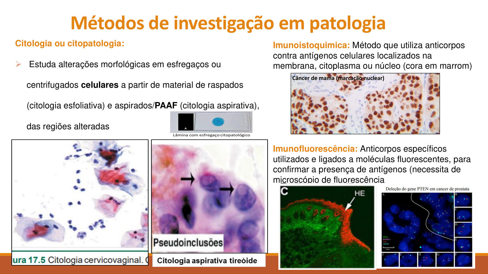
Imuno-histoquímica e imunofluorescência
Quando um tumor é muito atípico/indiferenciado — "uma maçaroca" em que ninguém reconhece a célula —, uma forma de descobrir sua identidade é caçar a sua origem embrionária. Para isso usamos a imuno-histoquímica.
- Imuno-histoquímica (IHQ)
- Método que utiliza anticorpos contra antígenos celulares localizados na membrana, citoplasma ou núcleo. A reação positiva cora em marrom. O truque é que esses anticorpos miram estruturas que não mudam na célula mesmo quando ela vira câncer — antígenos "imutáveis", como o citoesqueleto. Assim, mesmo numa célula indiferenciada, é possível revelar sua origem.
- Imunofluorescência
- "Uma imuno-histoquímica high-tech": usa anticorpos específicos ligados a moléculas fluorescentes para confirmar a presença de antígenos. Necessita de microscópio de fluorescência. As estruturas brilham em cores diferentes, permitindo delimitar com precisão o que é epitelial x mesenquimal (um cora em vermelho, outro em verde) e identificar diferentes mutações em um conjunto de células (uma em verde, outra em azul, outra em amarelo).
Marcadores imuno-histoquímicos por origem
Como os antígenos pesquisados se mantêm independentemente de a célula ser ou não cancerosa, eles funcionam como "carteira de identidade" da origem:
- Citoqueratina → células de origem epitelial (faz parte do citoesqueleto). Excelente marcador de cânceres epiteliais.
- Vimentina → células de origem mesenquimal.
- S100 → células de origem neural.
- PSA → marcador de próstata.
"O feijão com arroz ainda é a biópsia." Apesar do mundo de exames complementares novos — muitos ótimos, mas alguns pedidos "de aço de direito" que só confundem —, a IHQ e a imunofluorescência ajudam a achar a origem, mas o diagnóstico de base continua sendo a biópsia, e algumas citologias seguem fortes para triagem.
O que esperar de um laudo de biópsia
Sabendo que a biópsia trabalha com tecido, o laudo descreve achados que a citologia não consegue avaliar: presença ou ausência de atipia e pleomorfismo, presença ou ausência de necrose, presença de infiltrado inflamatório, descrição do córion/tecido conjuntivo (estroma), situação das margens (livres ou comprometidas), além de espessura e tamanho. Na citologia, por trabalhar só com células, avalia-se essencialmente a perda da polaridade — não há tecido nem margens para descrever.
Nomenclatura das neoplasias (OMS)
A nomenclatura dos tumores segue a padronização da OMS (Organização Mundial da Saúde), com base em três critérios:
- I — Comportamento clínico
- A neoplasia é benigna ou maligna? (Cresce lento x rápido, não invade x invade.)
- II — Critério histomorfológico
- Aspecto microscópico de benignidade ou malignidade e manutenção da arquitetura. Ex.: tumores que formam papilas recebem nomes "papiliformes".
- III — Origem da neoplasia (critério histogenético)
- A origem embrionária da célula ou tecido que prolifera (o parênquima). É o critério principal: a neoplasia é nomeada conforme a célula que prolifera e a origem dela.
Neoplasias de origem mesenquimal (mesodérmica)
O grupo mais fácil de nomear. Benignas → sufixo "-oma"; malignas → sufixo "-sarcoma". Todos os tecidos conjuntivos têm origem mesenquimal.
- Tecido conjuntivo (fibroblasto): benigno = fibroma / maligno = fibrossarcoma
- Tecido adiposo (lipoblasto): benigno = lipoma / maligno = lipossarcoma
- Osso: benigno = osteoma / maligno = osteossarcoma
- Cartilagem: benigno = condroma / maligno = condrossarcoma
- Músculo liso (leiomiócito): benigno = leiomioma / maligno = leiomiossarcoma
- Músculo esquelético (rabdomiócito): benigno = rabdomioma / maligno = rabdomiossarcoma
Detalhe importante do professor: o popular "mioma" do útero é, na verdade, um leiomioma — porque deriva da célula muscular lisa (leiomiócito).
Neoplasias de origem epitelial
A grande maioria dos tumores. Benignas → sufixo "-oma"; malignas → "carcinoma" (que pode vir como sufixo ou prefixo).
- Glândula (adenômero): benigno = adenoma / maligno = adenocarcinoma
- Pele/epitélio com proliferação papilomatosa de queratinócitos: benigno = papiloma / maligno = carcinoma epidermoide
- Carcinoma espinocelular e carcinoma basocelular: ambos são carcinomas epiteliais; o que muda é a célula que prolifera (um da camada intermediária/espinhosa, outro da camada basal).
Cuidado conceitual: nem todo nódulo que aparece na pele é tumor "de pele". Um lipoma, por exemplo, é de origem mesenquimal (tecido adiposo do subcutâneo) — ele só se manifesta alterando a pele, mas o que prolifera é o tecido mais interno.
A regra abre o vocabulário inteiro: pegue a célula → ache a origem (mesenquimal ou epitelial) → aplique o sufixo. Mesenquimal benigno = -oma, maligno = -sarcoma. Epitelial benigno = -oma, maligno = carcinoma. "Tudo tem sentido" — depois disso, você lê "condroma" num artigo e já sabe que é tumor benigno de cartilagem.
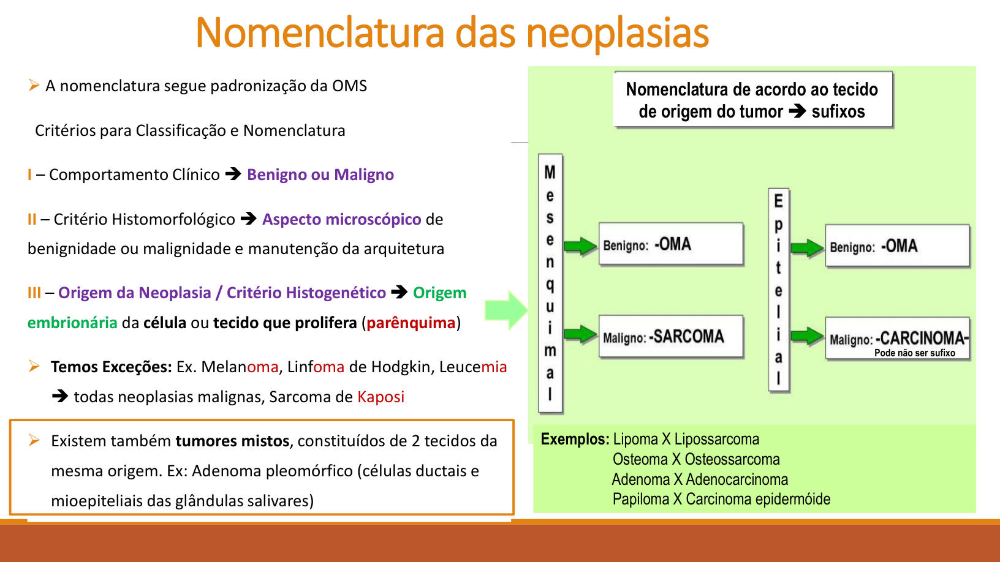
Exceções e tumores mistos
Como foram descobertas antes de as regras de nomenclatura serem estabelecidas, algumas doenças ficaram com nomes que contrariam a lógica dos sufixos. São exceções que você precisa decorar — todas são MALIGNAS apesar do "-oma":
- Melanoma — pela regra deveria ser "melanocarcinoma" (deriva do melanócito, célula intraepitelial de origem na crista neural). É maligno.
- Linfoma (incluindo o de Hodgkin) — não existe linfoma benigno; pela regra seria "linfossarcoma". É maligno.
- Leucemia — pela regra poderia ser "leucossarcoma". É maligna.
- Sarcoma de Kaposi — maligno.
Há ainda o caso do "-blastoma": embora termine em "-oma", blastomas são MALIGNOS, porque "blasto" significa célula imatura. Essa nomenclatura, portanto, ajuda — quando você vê "blastoma", já pensa em maligno.
Tumores mistos
Existem tumores constituídos por dois tipos de tecido da mesma origem. O exemplo clássico é o adenoma pleomórfico da glândula salivar, que tem proliferação de células ductais e células mioepiteliais — ou seja, duas origens em um só tumor.
Também é possível ter, num mesmo órgão, processos benignos e malignos concomitantes. É raro, mas pode acontecer — por exemplo, leiomiomas pequenos e leiomiossarcoma juntos no útero.
Lembrete: nem toda lesão é neoplasia, nem toda neoplasia é câncer
Lembrete importante para fechar a aula: nem toda lesão proliferada é neoplasia, e nem toda neoplasia é câncer. Em todos esses processos há aumento da multiplicação celular — a diferença está na AUTONOMIA das neoplasias.
- Hiperplasia — reativa e reversível.
- Displasia — reversível.
- Neoplasia — autônoma e irreversível.
O exemplo mais claro é a hiperplasia prostática benigna: o nome carrega "benigna", mas ela é uma hiperplasia, não uma neoplasia — tanto que se conhece como reduzir essa hiperplasia (há tratamento dirigido a ela). Só depois de confirmar que existe neoplasia é que se aplicam os critérios que diferenciam neoplasia benigna de maligna.
"Metade da prova é neoplasia." Saber o que é indicativo de neoplasia benigna e o que é indicativo de neoplasia maligna é o principal. E não caia na pegadinha do nome: "hiperplasia prostática benigna" tem nome de neoplasia, mas é hiperplasia. A palavra-chave que separa tudo é AUTONOMIA.
Exemplo clínico
Paciente com aumento de volume na bochecha, da mesma coloração da mucosa, percebido como uma lesão profunda à palpação. Na cirurgia, ao acessar a lesão com o bisturi, observa-se um tecido fibroelástico amarelado. O cirurgião não corta a lesão — ele apenas separa o tecido por divulsão (sem instrumento cortante), e a lesão "pula", desgrudando facilmente. Isso ocorre porque é uma neoplasia benigna encapsulada: por crescer lentamente, formou uma cápsula, e o tecido vizinho foi encapsulando-a. Trata-se de um lipoma — e um truque macroscópico confirma: jogado no formol, ele boia, por ser tecido de pouquíssima densidade (adiposo). O contraste é gritante com o lipossarcoma, cuja cirurgia é difícil: as células estão "trançadas", emaranhadas no meio do músculo e de tudo, sem plano de separação — às vezes obrigando à remoção de todo o membro acometido. Aqui se vê na prática a vantagem do crescimento lento e da formação de cápsula nas neoplasias benignas.
Conexões
Esta aula é a continuação direta da Aula 01, que apresentou os conceitos de neoplasia, autonomia, diferenciação e as características que separam o comportamento benigno do maligno (crescimento, invasão, atipia, pleomorfismo) — exatamente os critérios que aqui aplicamos para interpretar laudos e nomear tumores. O exemplo da próstata também retoma a sequência hiperplasia → displasia → neoplasia vista na Aula 01. Os métodos diagnósticos detalhados aqui (biópsia, citologia, IHQ) são a ponte para a Aula 03, em que se aprofundam os biomarcadores tumorais e a abordagem clínica/terapêutica das neoplasias — quando o "bater o martelo" do diagnóstico se converte em conduta.
- → O diagnóstico progride do exame clínico (visual + tátil: cor, forma, contorno, consistência, função; lesões borderline) aos exames complementares (bioquímicos inespecíficos; imagem RX/US/TC/RNM; moleculares ELISA/WB/PCR), mas quem "bate o martelo" é a biópsia.
- → Necrópsia = exame sistematizado pós-morte (Serviço de Verificação de Óbito); biópsia = fragmento de tecido VIVO e é o padrão-ouro das neoplasias.
- → Incisional = fragmento parcial, lesão grande/suspeita de malignidade, só diagnóstico. Excisional = lesão inteira, pequena/benigna, diagnóstico + terapêutico. Decisão pelo tamanho e pela hipótese.
- → PAAF (agulha fina) puxa CÉLULAS = citologia; core biopsy (agulha grossa) puxa TECIDO = biópsia. Coletas: direta (punch/bisturi), indireta (endo/colonoscopia), peças cirúrgicas (mastectomia, esofagectomia).
- → Fixação em formol/formalina 10%, volume 10x maior que a peça (nunca soro ou álcool). Margens pintadas com nanquim → livres x comprometidas. Coloração de rotina HE (~98%); especiais: tricrômico (colágeno), Verhoeff/Weigert (elásticas), prata (melanina/axônio/placas).
- → Citologia = rastreio/triagem (esfoliativa/Papanicolau; aspirativa/PAAF), mostra atipia mas NÃO define in situ x invasivo — sempre precisa biópsia. IHQ cora em marrom antígenos imutáveis (citoqueratina=epitelial, vimentina=mesenquimal, S100=neural, PSA=próstata); imunofluorescência usa microscópio de fluorescência.
- → Nomenclatura OMS por 3 critérios (clínico, histomorfológico, histogenético). Mesenquimal: -oma (benigno) x -sarcoma (maligno); epitelial: -oma (benigno) x carcinoma (maligno). Exceções malignas: melanoma, linfoma (Hodgkin), leucemia, sarcoma de Kaposi; blastoma = maligno (blasto = imaturo).
- → Tumores mistos = 2 tecidos da mesma origem (adenoma pleomórfico = ductais + mioepiteliais da salivar). Nem toda lesão proliferada é neoplasia, nem toda neoplasia é câncer (hiperplasia prostática benigna); o que define a neoplasia é a AUTONOMIA.
Progressão, Metástase e Estadiamento
Biologia do câncer: as capacidades adquiridas (hallmarks)
Por que isso importa
Na aula anterior você aprendeu a diferenciar uma neoplasia benigna de uma maligna e viu o conceito de gradação. Agora a gente fecha a história: o que acontece depois que uma neoplasia maligna se instala — como ela progride, como ela se espalha pelo corpo (metástase), como a gente classifica esse grau de avanço (estadiamento) e, principalmente, como tudo isso repercute clinicamente no paciente. Esse é o conhecimento que faz você suspeitar de um câncer mesmo quando o paciente chega com uma queixa aparentemente banal.
O ponto de partida é entender que câncer é uma doença genética: tem alteração de genótipo que se traduz em alteração de fenótipo. As células cancerosas adquirem um conjunto de capacidades biológicas — os chamados hallmarks of cancer (marcadores do câncer) — que permitem que elas sobrevivam, proliferem e progridam a ponto de, às vezes, tirar a vida da pessoa.
As capacidades que tornam uma célula cancerosa
Repare na diferença de vocabulário, que o professor faz questão de marcar: cancerígeno é o que tem a possibilidade de ativar uma via carcinogênica; canceroso é o que já tem o câncer instalado. E sempre que você fala em carcinogênese, está falando do caminho da neoplasia maligna — carcinogênese não existe para benigno.
Para um câncer sobreviver e progredir, ele precisa atingir capacidades como:
- Proliferação sustentada
- As células cancerosas proliferam sem parar. Diferentemente até da neoplasia benigna (que cresce, mas chega um momento em que para — tem crescimento limitado), aqui não há freio: faltam os sinais de "stop" da proliferação celular presentes em todos os tecidos normais.
- Neoangiogênese
- Para se sustentar, a célula cancerosa precisa ser capaz de produzir seus próprios vasos. Sem vascularização nova, o tumor não cresce além de poucos gramas.
- Evasão imune
- As células do câncer são tão fenotipicamente mutadas que muitas conseguem fugir do sistema imune, se camuflar e se proteger. Para um câncer progredir, ele precisa ativar alguma forma de evasão imune.
- Capacidade de invasão
- A célula maligna não respeita limites: ela invade os tecidos vizinhos. Essa é, junto com a metástase, uma característica patognomônica de malignidade.
- Imortalidade replicativa
- As células tumorais são frequentemente chamadas de "imortais". Cerca de 50% já têm mutação do p53; os outros 50%, por outras vias, conseguem inibir a sinalização de apoptose. Resultado: células que ficam proliferando indefinidamente.
Essa figura dos hallmarks você vai ver "direto" e cai em prova de residência. O raciocínio que o professor quer que fique: o câncer pode ser chamado de doença genética porque tem alteração de genótipo que gera alteração de fenótipo. Para ele progredir, não basta a célula tumoral — é preciso também um microambiente tumoral propício. Tumor + microambiente = progressão oncológica.
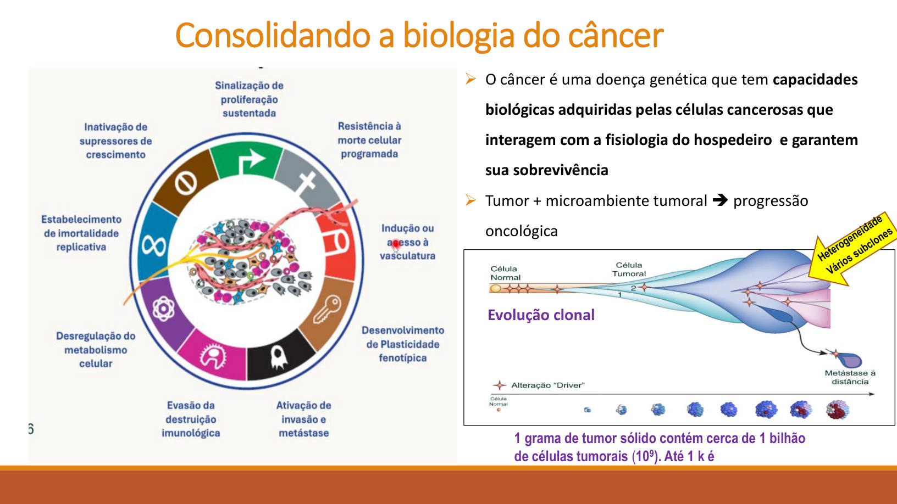
Evolução clonal: seleção darwiniana e heterogeneidade
Como o câncer se torna agressivo
Lembra do Darwin? Quem sobrevivia eram os mais adaptados. A evolução clonal (ou carcinogênese) funciona exatamente assim. Tudo começa em uma célula que sofreu mutação — e não só uma mutação: na evolução clonal as mutações se acumulam. À medida que essas células se dividem, as filhas das mutadas acumulam novas mutações. O resultado é uma proliferação heterogênea: não há expansão clonal homogênea no câncer, e sim vários subclones diferentes uns dos outros.
Será que todas essas células atingem a biologia completa do câncer (fazer vaso, fugir do sistema imune, proliferar sem parar)? Não. Começa a haver uma seleção darwiniana das mais sobreviventes, das mais adaptadas, das mais "fortes". O que sobra no final são justamente as células que conseguem fazer vasos, escapar do sistema imune e proliferar sem parar — ou seja, um câncer agressivo. O câncer geralmente começa num grupinho de células clonais heterogêneas, mas, à medida que o processo seletivo se refina, termina num câncer mais agressivo.
A escala do problema: 1 grama = 1 bilhão de células
Uma curiosidade que dá dimensão de tudo: para se ter 1 grama de tumor — que ainda seria imperceptível, não detectável em exame de imagem — são necessárias cerca de 1 bilhão de células tumorais (10⁹). Imagine o quanto isso é rápido e, ao mesmo tempo, o quanto o sistema imune trabalha o tempo todo tentando defender. Não é fácil juntar um bilhão de células; por isso o tumor leva, em geral, alguns meses para se tornar clínico (há cânceres que evoluem em um ou dois meses, mas a maioria leva mais tempo).
No final, sempre teremos uma população clonal com vários subclones derivados daquela mutação que começou em uma única célula. E os vasos? Ficam no estroma — no microambiente em torno das células neoplásicas.
Macete de raciocínio: não basta "ter um câncer no corpo". É preciso um microambiente tumoral propício. Por isso a área dos vasos e do conjuntivo que contorna o câncer — o microambiente tumoral (MAT) — ganhou tanta força: se o microambiente for ruim, muitas vezes o câncer não vai para frente. Células tumorais + microambiente propício = "case de sucesso" do câncer.
Progressão: do carcinoma in situ ao invasivo
A barreira que define tudo: a membrana basal
Agora que o câncer se instalou, como ele progride clinicamente? A neoplasia maligna pode ser classificada pela sua capacidade de invasão. Pense num exemplo gástrico: a carcinogênese provocou mutação e proliferação no revestimento epitelial; com o tempo, os subclones heterogêneos proliferam, e a característica fundamental da neoplasia maligna aparece — invadir os tecidos subjacentes.
O que protege contra essa invasão é a membrana basal (MB): aquele conjuntivo bem delicado entre o epitélio e o conjuntivo subjacente, composto principalmente por colágeno tipo IV.
- Carcinoma in situ
- Quando a proliferação maligna ainda respeita a membrana basal — ou seja, a MB está preservada e os tecidos de baixo não têm células neoplásicas. Escreve-se in situ em itálico (é do latim). Mesmo um tumor grande, se não romper a MB, ainda é in situ.
- Carcinoma invasivo / infiltrativo
- Quando as células tumorais degradam a membrana basal e invadem o estroma subjacente, podendo chegar ao conjuntivo, à camada muscular e até à perfuração. Nos laudos aparece como "carcinoma invasivo" ou "carcinoma infiltrativo".
- Carcinoma microinvasivo
- Quando o patologista, percorrendo a lâmina, vê a MB respeitada em quase toda a extensão, exceto um ponto, com uma célula do outro lado da fronteira. Dependendo do tipo de câncer e da cirurgia, isso precisa ser relatado — geralmente amplia-se um pouco mais a margem.
O mecanismo molecular da invasão
Como as novas células tumorais conseguem atravessar a membrana basal? Por seleção darwiniana, os novos clones ganham o fenótipo de produzir enzimas que degradam a matriz:
As células neoplásicas secretam colagenases e elastases, que degradam a MB e o estroma, e metaloproteinases de matriz extracelular — em especial MMP-2 e MMP-9 —, que degradam o colágeno. Além disso, inibem proteínas de coesão entre as células tumorais, como a e-caderina, soltando as células umas das outras. A ação inflamatória local (macrófagos e linfócitos) também participa.
No começo, o clonezinho das primeiras células tumorais ainda não consegue isso — por isso o carcinoma in situ fica algum tempo "contido" e a membrana basal chega até a espessar para fazer um "escudo" (você vê isso na microscopia). Mas chega uma hora em que as células conseguem produzir colagenases e metaloproteinases, degradam a MB e atingem o fenótipo invasivo.
NÃO CONFUNDIR a membrana basal com a cápsula conjuntiva dos tumores benignos! São coisas distintas. A MB é a barreira de colágeno IV cuja ruptura define a invasão na neoplasia maligna; a cápsula é o tecido conjuntivo que delimita um tumor benigno. Lembre também: a MB muda de posição conforme o tecido — num ducto mamário, por exemplo, ela fica ao redor do ducto. Se um adenocarcinoma proliferou dentro do ducto mas a MB ao redor está preservada, é um adenocarcinoma ductal in situ.
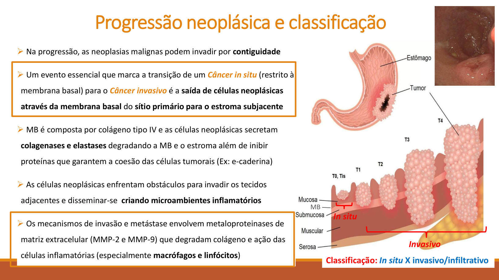
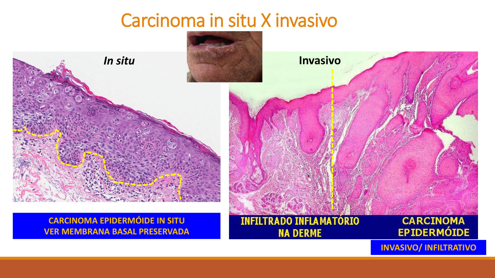
Aspectos morfológicos macroscópicos
As quatro formas de crescimento
Macroscopicamente, de que maneiras a neoplasia maligna pode se apresentar?
- Lesão nodular
- Típica de tireoide e mama. São nodulações irregulares; na mama, fala-se em nodulação espiculada (com pontas irregulares de textura, nunca lisa nem facilmente delimitável) e fixa — fixa porque está invadindo, tem capacidade de invasão.
- Lesão vegetante
- Cresce em áreas com espaço físico, como a cavidade gástrica e o intestino (têm luz/lúmen). Prolifera "com vida própria", como as algas do fundo do mar. É muito comum encontrar áreas de hemorragia, porque a vascularização não acompanha o crescimento.
- Lesão infiltrativa
- Começou como um nódulo (por exemplo, um nódulo mamário) mas foi rompendo os tecidos conjuntivos e perfurando.
- Lesão ulcerada crônica
- A clássica. É preciso escrever crônica: úlcera que não cicatriza é suspeita.
A úlcera neoplásica que você precisa reconhecer
A úlcera maligna tem características próprias: persiste por mais de 15 dias (qualquer ferida normal cicatriza em torno de 7 dias — tira-se a sutura nesse tempo), frequentemente com histórico de meses, é indolor e, à palpação, suas bordas são elevadas e endurecidas (não é uma úlcera "cavitada" simples). A borda é endurecida porque há hiperplasia (camada mais espessa de células) e fibrose do conjuntivo tentando cicatrizar — mas ela não cicatriza, persiste.
Por que indolor? No caso de uma lesão cutânea em epiderme, enquanto está in situ ela não atinge a derme — e a epiderme não tem terminação nervosa. Atenção ao diagnóstico diferencial: úlcera de decúbito tem outra patogênese (hipóxia por posição), assim como a úlcera varicosa. Quando não é nenhuma dessas, e a úlcera crônica indolor de bordas elevadas persiste, tem que investigar. Cuidado também com queratoses que mudam de aspecto e viram úlcera: essas devem ser investigadas.
Neoangiogênese: o câncer constrói seus próprios vasos
Por que o tumor precisa de neovasos
A neoplasia que virou invasiva depende da vascularização para continuar crescendo. Quando o tumor é aquele "1 grama" inicial, ele se alimenta por difusão a partir dos vasos do próprio tecido conjuntivo. Mas, com a seleção darwiniana, as células mais agressivas proliferam — já não são 1 grama, são 10 gramas. E não dá para alimentar uma população celular grande só por difusão.
A solução das células tumorais é produzir fatores de crescimento vascular: VEGF, FGF e PDGF (pró-angiogênicos). A neoangiogênese é o desenvolvimento de neovasos a partir de vasos maduros preexistentes (diferente da vasculogênese, que é processo embrionário). Os vasos maduros da região começam a proliferar em alta velocidade para alimentar a nova massa.
Neovasos: rápidos, porém defeituosos
"A pressa é inimiga da perfeição": como a neoangiogênese é descontrolada e veloz, os neovasos são tortuosos, ramificados e frágeis (menos resistentes que vasos normais). Isso traz consequências clínicas: muito risco de microtrombos, ruptura, hemorragia e necrose.
Há ainda o papel da hipóxia: em áreas pouco oxigenadas, ativa-se o HIF (HIF-1), um marcador estudado para saber o grau de adaptação do câncer à hipóxia. Quanto mais adaptado à hipóxia, mais agressivo o tumor — alguns fenótipos conseguem se adaptar ao estado hipóxico e se tornar ainda mais agressivos.
Aplicação terapêutica: alguns tumores respondem muito bem ao bloqueio dos neovasos. Existem drogas antiangiogênicas (terapias-alvo) como o sunitinibe e o bevacizumabe, que bloqueiam a via do VEGF — sem vaso novo, o tumor sólido tende a morrer por hipóxia. A potente atividade mitogênica do VEGF sobre o endotélio justifica os inúmeros estudos clínicos nessa linha. A ressalva do professor: como a célula tumoral é imortal e está em seleção darwiniana constante, alguns fenótipos conseguem desviar disso e sobreviver à hipóxia.
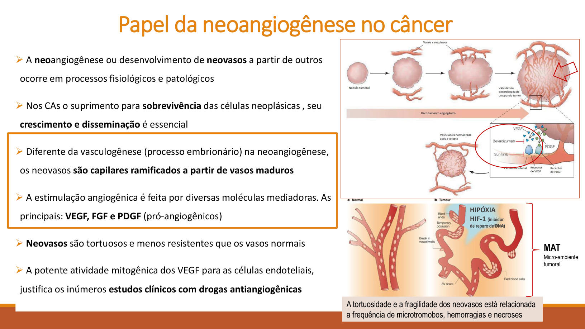
Metástase: o conceito e a transição epitélio-mesênquima
O que é metástase
Se o câncer continua atingindo fenótipos cada vez mais agressivos, ele pode provocar metástase.
- Metástase
- Desenvolvimento de implantes tumorais secundários que são fisicamente separados do tumor primário. Não basta romper a MB e passar para o estroma vizinho — a célula "abre o corpo" e vai se implantar em outro lugar (começou num câncer gástrico e foi parar no pulmão).
- Tumor secundário
- Outro nome para a metástase. É o mesmo tumor de origem, mas instalado fora do órgão primário. Nos exames de imagem aparecem "tumor primário" e "tumor secundário". Macroscopicamente, são nódulos múltiplos, bem delimitados, de tamanhos diversos, na superfície ou no interior de órgãos distantes.
A invasão local e a capacidade de metastatizar são características patognomônicas das neoplasias malignas. Guarde isso: neoplasia benigna NÃO faz metástase. Se o supervisor diz "é um tumor benigno, mas está grande", não cabe perguntar se tem metástase; se ele diz "é tumor maligno", cabe perguntar se é in situ, invasivo, ou se já tem fase metastática.
Transição epitélio-mesênquima (EMT): como a célula viaja
O fenômeno metastático envolve mais mutações até a célula atingir a transição epitélio-mesênquima (EMT). Não significa "deixar de ser epitélio": significa que a célula adquire um grau de transformação em que ora se comporta como epitelial, ora como mesenquimal — não mantém mais nenhum padrão (atipia fortíssima).
O raciocínio é elegante. Para formar um tumor primário, as células ficam grudadas umas nas outras (epitélios têm junções). Para viajar, a célula precisa parar de expressar as proteínas de junção intercelular (inclusive inibe a e-caderina) e se soltar, migrando geralmente de forma isolada. Ao chegar no segundo órgão, ela precisa voltar a expressar essas junções, "virar epitelial de novo" e se reunir para formar o tumor secundário — porque, se ficasse sozinha, seria fagocitada. No tecido saudável, a célula não muda; a EMT é uma capacidade da célula maligna.
Detalhe estatístico importante: a grande maioria das células tumorais desgarradas morre (na ordem de 1 em 10.000 sobrevive). Nem todos os cânceres atingem essa capacidade — ela depende da biologia complexa do tumor e de sua interação com o sistema imune.
Quem metastatiza cedo e quem não metastatiza: o melanoma é exemplo de rápida progressão metastática — há um critério de que melanomas com mais de 3 mm de espessura já são considerados metastáticos (3 mm em pele já é muito). O osteossarcoma (sarcoma de tecido ósseo) também costuma já começar metastático, porque o osso está coladinho à medula óssea — caiu uma célula lá, acabou. Já o carcinoma basocelular, mesmo proliferando e com mutações, tem fenótipo geralmente não metastático — raríssimas metástases.
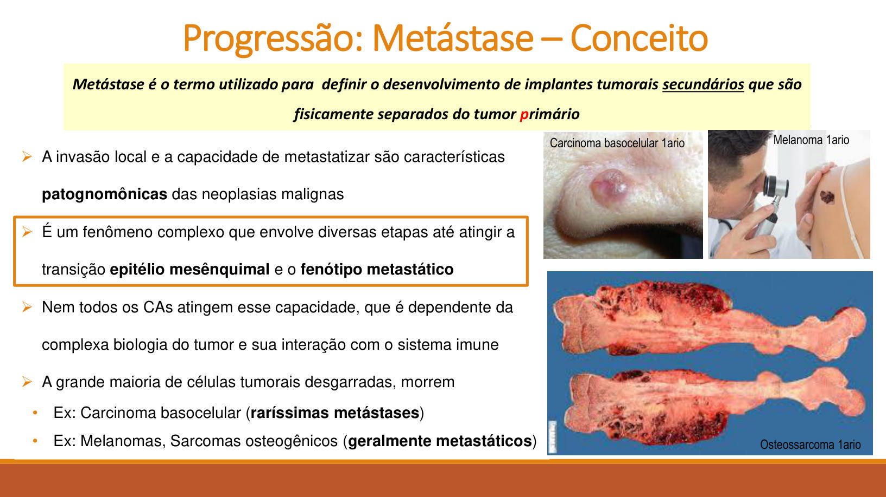
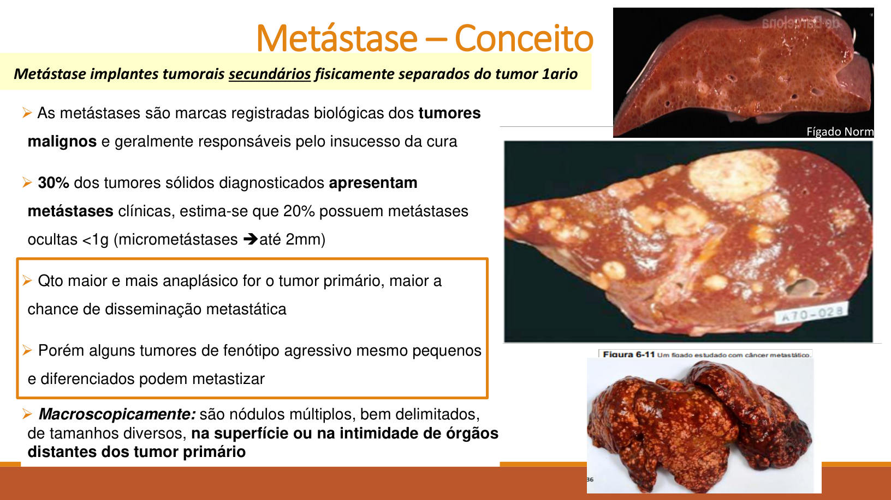
As três vias de disseminação metastática
Via 1 — Implantação em cavidades corporais
Ocorre quando a neoplasia invade uma cavidade corporal naturalmente próxima e se implanta difusamente na superfície dos órgãos vizinhos. O principal exemplo é o carcinoma de ovário: o tumor surge no epitélio que recobre o ovário, prolifera, e as células se destacam e se implantam no peritônio (carcinomatose peritoneal), na tuba, no útero ou no intestino. Outro exemplo é o meduloblastoma, que prolifera dentro de um ventrículo e pode se espalhar por implante em outras cavidades do sistema ventricular cerebral.
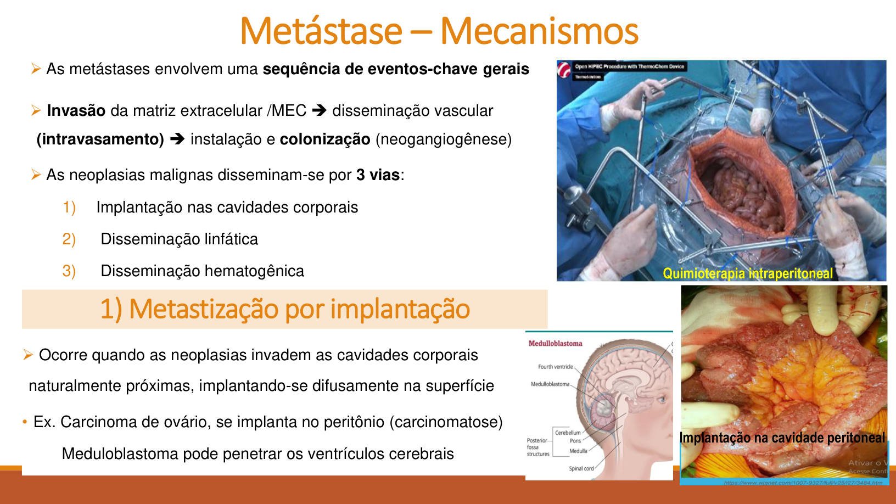
Via 2 — Disseminação linfática
É a via mais comum e característica dos cânceres de origem epitelial (carcinomas). As células tumorais escolhem o fluxo linfático e migram pela rede linfática de drenagem regional. Algumas são reconhecidas e destruídas pelo sistema imune, mas as que sobrevivem chegam aos linfonodos regionais — a primeira parada. O padrão de comprometimento depende da localização do tumor e de suas vias de drenagem (ex.: adenocarcinoma de mama em quadrante superior externo metastatiza para o linfonodo axilar; carcinoma de pulmão metastatiza primeiro para linfonodos brônquicos).
Linfonodo sentinela e metástase saltatória
- Linfonodo sentinela
- É o primeiro linfonodo no trajeto do tumor até a cadeia linfonodal regional — geralmente o primeiro local de metástase. A biópsia do linfonodo sentinela é indicada em alguns cânceres (ex.: CA de mama, melanoma) para determinar a extensão da disseminação e a necessidade de esvaziamento.
- Esvaziamento linfonodal
- Quando se confirma a presença de células cancerosas no linfonodo, retiram-se os linfonodos da cadeia. No câncer de mama (a maioria não é detectada in situ), faz-se esvaziamento axilar/braquial pelo risco de células tumorais ali.
- Metástase saltatória
- Quando as células atravessam os primeiros linfonodos e ficam aprisionadas nos subsequentes — "pulando" o sentinela (ex.: câncer de mama cujo linfonodo acometido não é o esperado). Pode acontecer, mas o normal é o sentinela ser acometido primeiro.
Atenção: nem todo linfonodo aumentado é metástase. A linfadenomegalia pode ser reativa (linfadenites aumentam o volume sem invasão). Por isso avalia-se a característica clínica: linfonodos metastáticos tendem a ser fixos e endurecidos (até pétreos); reativos costumam ser móveis e de contornos regulares.
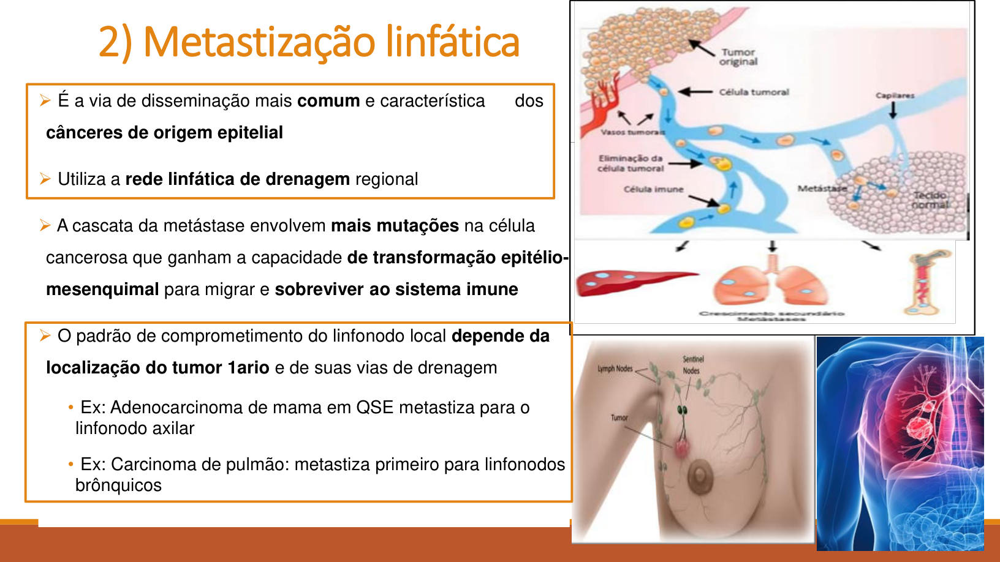
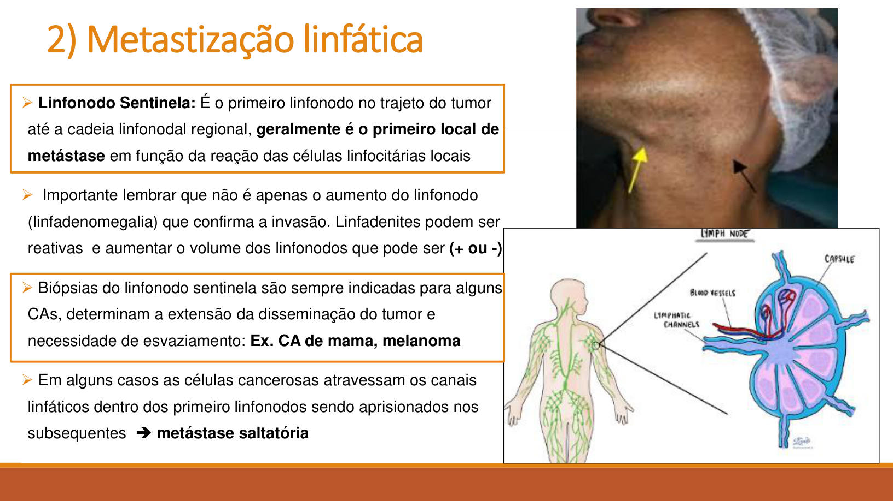
Via 3 — Disseminação hematogênica
É a principal via de disseminação dos sarcomas (tumores de origem mesenquimal/conjuntiva). Faz sentido: o tecido conjuntivo, adiposo, ósseo/cartilaginoso já está imerso em vasos. As células penetram os vasos locais, mais por veias do que por artérias (a veia tem fluxo laminar e gasta menos energia para invadir; a artéria, com fluxo pressórico, "empurra" — embora metástase arterial também exista).
Como o fluxo portal drena para o fígado e todo o sangue da veia cava se dirige aos pulmões, esses dois órgãos são os mais frequentes nessa via — e, na prática, os campeões de metástase por qualquer via. Também há metástases ósseas, comumente na medula óssea (o osteossarcoma praticamente já prolifera dentro dela).
O escudo de plaquetas
Uma forma engenhosa de evasão imune na via hematogênica: as células neoplásicas, ao viajar (muitas vezes em grupinhos de poucas células), se revestem com um "escudo" de plaquetas para não serem reconhecidas pelo sistema imune. É como se dissessem "está só na minha mãozinha, não sou ninguém". Depois sofrem o processo de migração para fora do vaso (extravasamento) e se instalam no novo tecido.
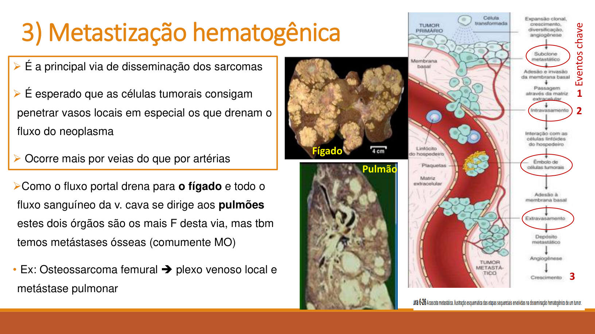
Teoria solo-semente e êmbolo neoplásico
Por que cada câncer "escolhe" certos órgãos
Os cânceres podem usar qualquer das três vias, e a grande maioria segue as vias naturais de drenagem — mas é o fenótipo da célula que determina o sítio secundário. Paget descreveu a teoria solo-semente: a célula tumoral é a "semente" e o órgão de destino é o "solo". A metástase depende tanto do tropismo da célula por certos tecidos quanto da condição do microambiente do órgão receptor.
Por isso fala-se tanto em condições de microambiente adquiridas: um fígado ou pulmão saudável dificulta a instalação da célula tumoral; um fígado com esteatose ou um pulmão de tabagista oferece "solo" muito mais fértil. Exemplos de tropismo: câncer de próstata → metástase óssea; câncer gástrico → metástase hepática. Há ainda órgãos que, apesar de receberem muito sangue, raramente são acometidos (ex.: rim como sítio secundário é mais raro) — provavelmente por oferecerem "solo" menos receptivo.
Importante: os carcinomas também podem usar a via hematogênica para crescer — ex.: o carcinoma renal cresce na direção da veia cava inferior; o hepatocarcinoma cresce nas raízes das veias porta e hepática. Dentro dos clones neoplásicos surgem genes pró-metastáticos que dirigem todo esse comportamento.
Êmbolo neoplásico
Não é raro o patologista encontrar grupos de células tumorais dentro de vasos, viajando — o êmbolo neoplásico. A maioria dessas células será atacada pelo sistema imune, mas algumas sobrevivem. A presença de êmbolos neoplásicos nos laudos é um sinal importante: mesmo que o patologista tenha visto apenas a lesão primária, a constatação de células tumorais dentro dos vasos torna a metástase praticamente certa.
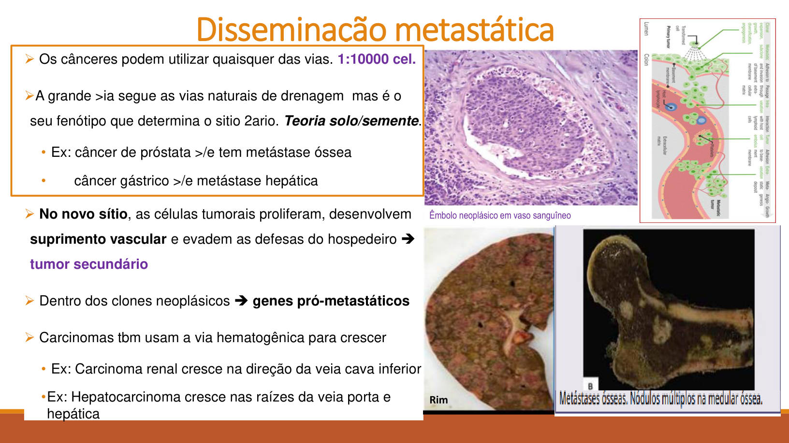
Estadiamento clínico: o sistema TNM
O que é estadiar e por que importa
A gradação histológica já avalia a progressão (tumores bem diferenciados e in situ têm melhor prognóstico; mal diferenciados tendem a ser invasivos). O segundo item é o estadiamento clínico: estabelecer a localização e o grau de disseminação do câncer para orientar conduta e prognóstico, de maneira universal — o estadiamento é mundial. O mesmo relatório vale no Japão ou na Alemanha; juntas internacionais atualizam os critérios periodicamente, por tipo de câncer.
O estadiamento usa exames de imagem (radiografia/RX, tomografia/TC, ressonância/RM, cintilografias ósseas e PET) e, após a confirmação microscópica, considera três características macroscópicas do tumor: (1) tamanho do tumor primário e extensão local; (2) acometimento metastático de linfonodos; (3) presença de metástases sistêmicas à distância.
Os escores do sistema TNM (UICC)
O método mais difundido é o da União Internacional Contra o Câncer (UICC), baseado em três parâmetros:
- T — tumor primário (tamanho/extensão)
- T0 ou Tis = neoplasia in situ (o melhor dos cenários). T1, T2, T3 = tamanhos crescentes (T1 geralmente até 2 cm). T4 = crescimento além dos limites do órgão (os infiltrativos que perfuram).
- N — linfonodos regionais
- N0 = ausência de metástase linfonodal (ótimo prognóstico). N1, N2, N3 = metástase de acordo com localização e número (muda muito conforme a cadeia). NX = impossibilidade de avaliar os linfonodos.
- M — metástase sistêmica à distância
- M0 = sem metástases sistêmicas. M1 = com metástases à distância (tumores secundários).
A somatória de T + N + M determina o estádio do tumor, de 0 a IV (cada órgão tem seu estadiamento próprio; pode-se ter, por exemplo, estágio IA e IB). Não é necessário decorar — há até aplicativos de estadiamento por órgão. O que importa saber: T0/Tis, T1 (≤2 cm), T4 (além do órgão); N0; M0/M1.
Dado de prova: carcinoma in situ = estádio 0, ~100% de sobrevida em 5 anos; estádio I, quase 100%; estádio IV, ~22% de sobrevida em 5 anos. Essa diferença gigante é o motivo de estadiar. Macete clínico de mama: T1 (<2 cm, bem delimitado) com N0 e M0 → cirurgia e acabou; T4 já costuma ter acometimento linfonodal obrigatório e, quase sempre, metástase à distância. Regra prática: T0 geralmente acompanha N0 e M0 — mas "na medicina nem tudo é sempre", alguns cânceres in situ já podem ter cometido um linfonodo, por isso ainda se investiga.
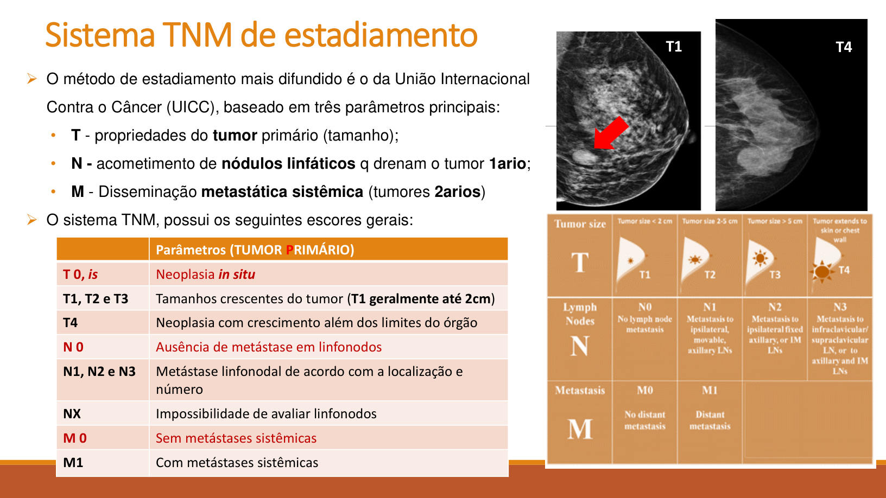
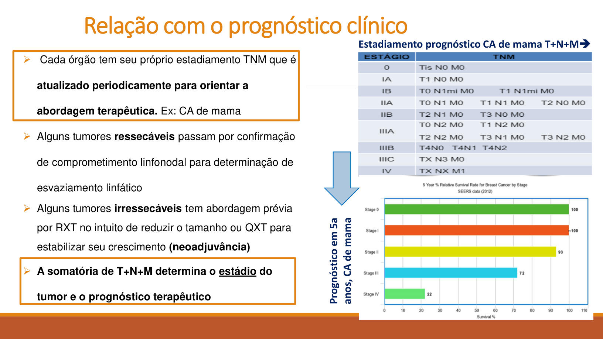
Curso clínico: efeitos locais, efeito de Warburg e caquexia
Efeitos locais e funcionais
A progressão do câncer tem efeitos locais e funcionais. Dependendo de onde prolifera, o tumor pode colidir/comprimir tecidos vitais (comprometendo função), causar obstrução (pense no tumor de esôfago → disfagia progressiva), provocar hemorragias, gerar áreas de necrose (que viram meio de cultura → infecções secundárias, com hemogramas muito alterados) e até perfuração.
Efeito de Warburg
Mesmo na presença de oxigênio, as células cancerosas alteram o metabolismo mitocondrial e fazem glicólise anaeróbia — preparando-se para sobreviver à hipóxia. Isso é o efeito de Warburg. Em vez da glicólise aeróbia com ciclo de Krebs rendendo ~36 ATP, a célula tumoral usa uma via que produz menos ATP (menos eficiente).
A consequência para o organismo é grave: a célula tumoral demanda mais energia, mas produz menos, "queimando" todo o oxigênio numa via ineficiente. O organismo entra em déficit e começa a queimar carboidratos, gordura e proteína. Como a hematopoiese é um dos processos celulares mais demandantes do dia a dia, é dos primeiros a sofrer — daí parte da anemia de consumo do paciente oncológico (somada ao risco de micro-hemorragias).
Caquexia oncológica
A caquexia acompanha a progressão neoplásica e atinge ~80% dos pacientes oncológicos. É o estado de perda de tecido adiposo e massa magra, com anorexia, anemia e fraqueza profunda. O critério a guardar: perda ponderal não intencional de pelo menos 5% do peso em período curto (cerca de 1 mês) — num homem de 80 kg, isso são ~4 kg num mês sem ter feito nada.
Os mecanismos não são totalmente conhecidos, mas envolvem:
- Efeito de Warburg
- Desvio energético para o tumor, com produção ineficiente de ATP e fatores proteolíticos (modo "depletivo").
- Inflamação sistêmica
- Uma "chuva" de citocinas inflamatórias, com aumento de TNF-alfa. No paciente oncológico o TNF-alfa não vai embora — ele vive em estado de hiper-TNF-alfa.
- Taxa metabólica basal elevada
- O tumor em progressão eleva o gasto energético basal, levando a atrofia generalizada (sarcopenia) e proteólise muscular uniforme.
Quem caquetiza mais cedo: pacientes com cânceres de trato gastrointestinal (TGI) e de cabeça e pescoço (CCP) são acometidos mais precocemente — somam o efeito metabólico à própria dificuldade de se alimentar. O recado clínico do professor: valorize a queixa do paciente. Perda de peso inexplicada, cansaço progressivo e sintomas "sem nexo" são, muitas vezes, justamente o que precisa ser investigado.
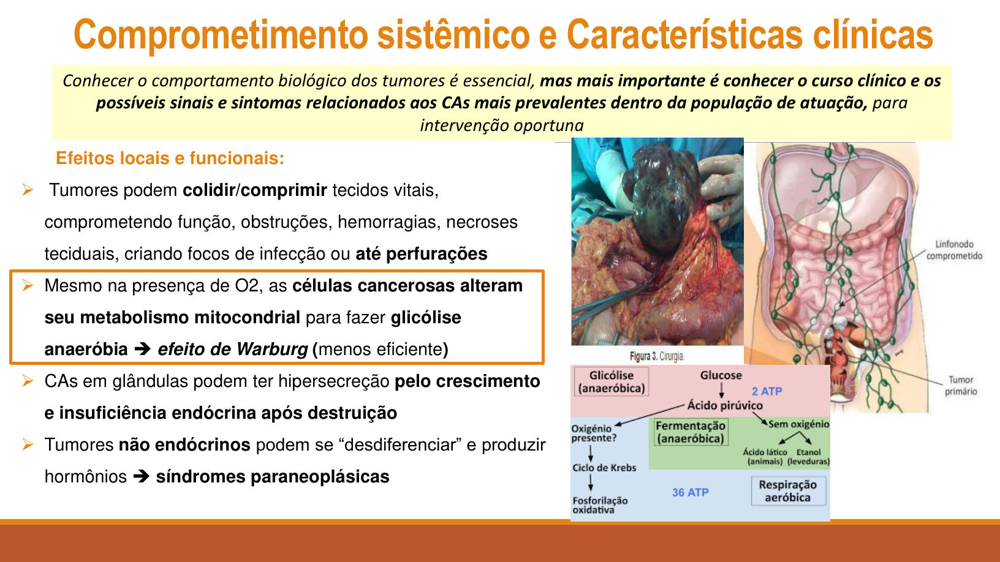
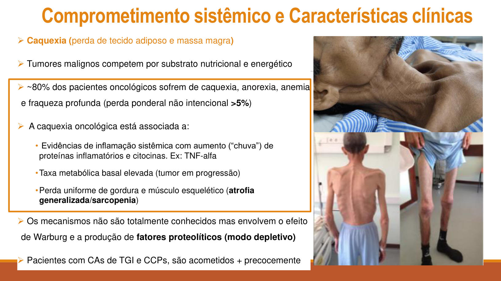
Síndromes paraneoplásicas
Quando o tumor faz "coisas malucas" no corpo
Tumores não endócrinos podem, ao se desdiferenciar (tornando-se células imaturas, mais próximas de células-tronco), passar a produzir hormônios. Daí surgem as síndromes paraneoplásicas: complexos de sintomas em portadores de câncer que não podem ser explicados pela disseminação do tumor. Exemplos:
- Endocrinopatias
- Síndrome de Cushing (cortisol elevado) e hipercalcemia — de origem osteolítica ou paratohormonal (produção tipo paratormônio levando a reabsorção óssea). Há pacientes que descobrem o câncer porque sofrem uma fratura por reabsorção esquelética enlouquecida.
- Síndromes neuropáticas
- Polimiopatia, neuropatias periféricas, degeneração neural e síndromes miastênicas (ex.: paciente jovem que de repente não consegue levantar).
- Osteoartrites hipertróficas
- Manifestação osteoarticular paraneoplásica.
- Distúrbios dermatológicos
- Acantose nigricans — bom marcador de síndrome metabólica, mas que também pode acompanhar pacientes neoplásicos (é uma alteração proliferativa ativável pelas células tumorais).
- Hipercoagulabilidade
- Toda a cascata de coagulação fica alterada, com risco de coagulação intravascular disseminada (CIVD).
Tratamento da reabsorção óssea: para bloquear o mecanismo de destruição óssea (osteolítica/paratohormonal) usam-se bisfosfonatos como o ácido zoledrônico e o denosumab. E uma pérola de raciocínio: hormônio muito alterado com a glândula de origem normal (ex.: T3/T4 altos com tireoide normal) deve fazer você pensar em produção ectópica por um tumor de outro órgão — uma síndrome paraneoplásica.
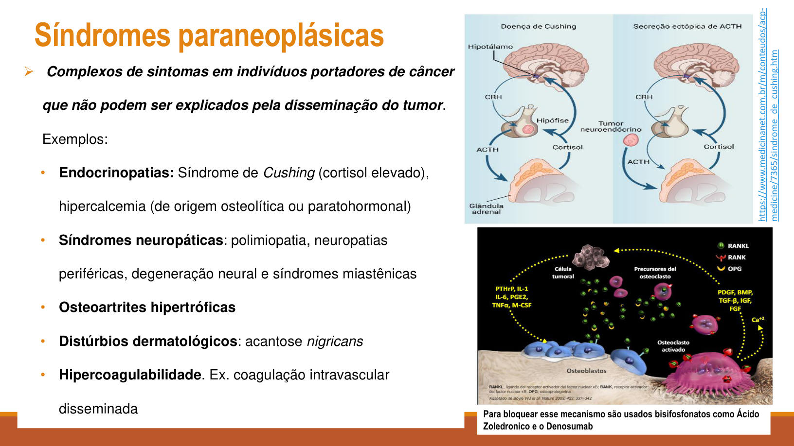
Condições predisponentes adquiridas
O "solo fértil" para o câncer
Algumas condições adquiridas criam um "solo" fértil para a neoplasia maligna e devem ser avaliadas na investigação:
- Distúrbios inflamatórios crônicos
- A inflamação crônica abre via de carcinogênese — ex.: a gastrite crônica. As neoplasias que surgem nesse contexto são principalmente carcinomas.
- Estados de imunodeficiência
- Predispõem sobretudo a cânceres induzidos por vírus. No paciente com HIV, por exemplo, há risco muito aumentado de sarcoma de Kaposi e cerca de 4× mais risco de câncer de boca.
- Obesidade (estado antiapoptótico)
- Hoje é considerada um estado de imunodeficiência e antiapoptótico: o tecido adiposo mantém inflamação contínua, e células inflamatórias sobrevivem mais tempo (antiapoptose), com células "mais velhas" circulando.
- Lesões precursoras
- Metaplasia e displasia brônquica e esofágica; hiperplasia e displasia endometriais; leucoplasia da cavidade oral, vulva e pênis; adenoma viloso do cólon (um tumor benigno com risco de progressão).
Nos exames laboratoriais, esses pacientes costumam ter proteína C-reativa (PCR) aumentada e leucocitose, em especial às custas de linfocitose — sinais a observar para levantar a hipótese de neoplasia.
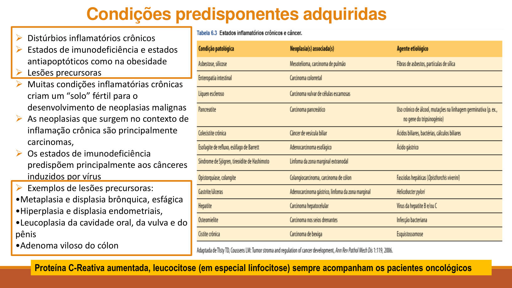
Determinação histogênica das metástases
De onde veio essa célula?
Às vezes o tumor secundário (metástase) é percebido antes do tumor primário. Os carcinomas metastáticos costumam formar tumores anaplásicos, exigindo investigação complexa para identificar a célula de origem. A ferramenta é a imuno-histoquímica: cora-se em marrom estruturas tecido-específicas ou órgão-específicas que não mudam apesar do pleomorfismo. Marcadores:
- Citoqueratina
- Indica origem epitelial (ex.: citoqueratina 20, expressa por células glandulares do cólon).
- Vimentina
- Indica origem conjuntiva/mesenquimal.
- S100
- Indica origem neural.
- PSA
- Marcador de origem prostática.
Exemplo clínico — a metástase descoberta primeiro
Caso real relatado pela professora: uma biópsia de nódulo na boca (~1 cm) que, em uma semana, estava com 3 cm. O laudo demorou porque a célula não se parecia com nada da região. A imuno-histoquímica revelou um citoesqueleto de células renais: era metástase de carcinoma renal. O paciente tinha uma dor lombar em investigação e nem se desconfiava de tumor; a metástase em boca apareceu antes do diagnóstico do primário. Após a nefrectomia, evoluiu bem. (Há na literatura casos muito semelhantes de tumor secundário em fígado, pulmão e boca de outra origem.)
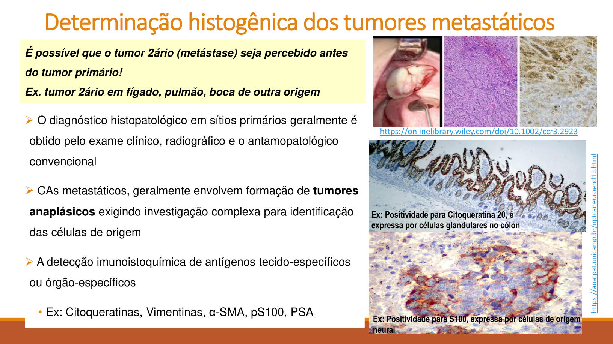
Câncer esporádico x hereditário
A grande maioria é adquirida
Todos os cânceres são alterações genéticas — mas isso não os torna hereditários. Muita gente (até profissional de saúde) acha que o hereditário é o mais comum; não é. ~95% dos cânceres são esporádicos/adquiridos e apenas ~5% têm componente hereditário.
- Câncer esporádico (~95%)
- Acontece "por acaso", associado a estilo de vida e condições pró-inflamatórias: inflamação crônica, obesidade, imunossupressão, agentes carcinogênicos, susceptibilidade do hospedeiro e presença de lesões precursoras. São vias ambientais, de fora para dentro.
- Câncer hereditário (~5%)
- Síndromes com mutações germinativas (presentes em todas as células do organismo), particularmente em genes supressores de tumor. Como a mutação já está presente desde o nascimento, a pesquisa genética pode ser feita antes da doença, permitindo rastreamento precoce. São relativamente mais comuns na oncologia pediátrica.
Quem mais contribui para os 5%: os cânceres pediátricos e o de mama.
Síndromes hereditárias clássicas
- BRCA1 / BRCA2 → mama
- Genes de reparo de DNA. Mulheres com mutação têm até ~100% de chance de manifestar câncer de mama até por volta dos 50 anos. Por isso existem protocolos de mastectomia profilática (caso Angelina Jolie).
- Li-Fraumeni → p53
- Mutação germinativa do p53 ("o maior gesto de proteção contra a proliferação" já nasce mutado). Permite qualquer tipo de câncer em qualquer idade, inclusive pediátrico. No Brasil é relativamente frequente (~1:300), por uma variante recessiva.
- Cowden → PTEN
- Mutação germinativa do supressor PTEN, predispondo principalmente a câncer de endométrio, mama e tireoide.
- Retinoblastoma
- Exemplo clássico de câncer hereditário pediátrico.
Por que isso muda sua conduta: conhecer a parcela hereditária da população que você atende justifica a anamnese e o histórico familiar. Se há síndrome hereditária na família, existe risco aumentado e o indivíduo pode entrar em programa de rastreamento precoce. Não esqueça: apesar de o câncer ser doença genética, o tipo hereditário NÃO é o mais comum — é o esporádico, fruto do meio ambiente.
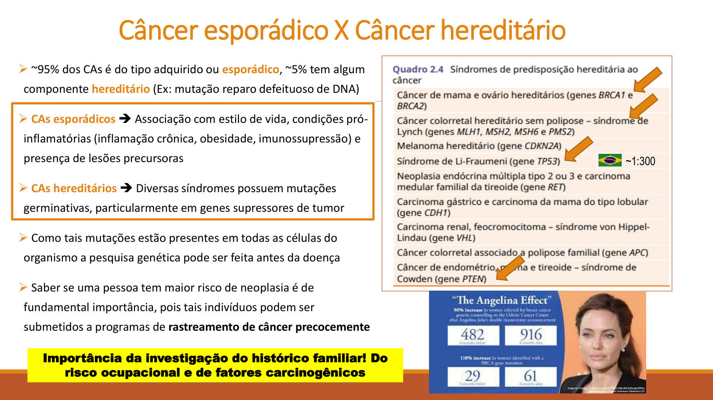
Biomarcadores tumorais
Marcadores que ajudam (mas não fecham o diagnóstico)
O diagnóstico de câncer é por biópsia. Os biomarcadores servem para apoiar o diagnóstico ou acompanhar o sucesso do tratamento. Podem ser proteínas, mutações de DNA, alterações de RNA ou metabólitos mensuráveis. Os principais antígenos tumorais e seus cânceres:
- CEA (antígeno carcinoembrionário)
- Antígeno oncofetal usado no acompanhamento de diversos cânceres.
- AFP (alfa-fetoproteína)
- Câncer de fígado.
- PSA (antígeno prostático específico)
- Câncer de próstata. Exemplo de raciocínio: próstata removida (prostatectomia total) e PSA que sobe depois → tecido prostático proliferando em outro lugar = metástase.
- CA-125
- Câncer de ovário.
- CA-19.9
- Câncer de pâncreas.
Os antígenos oncofetais são codificados por genes reprimidos após o nascimento que voltam a se expressar com a transformação neoplásica. E estuda-se hoje a biópsia líquida: como células tumorais e DNA tumoral circulam pelo sangue mesmo sem metástase, procura-se detectá-los no sangue.
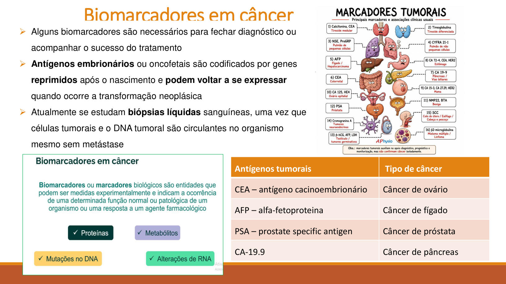
Bases do tratamento
Do bisturi às terapias de fronteira
Compreendida a progressão, as bases do tratamento ficam claras:
- Cirurgia (T1/T2, N0, M0)
- Neoplasias sólidas restritas ao órgão têm alta expectativa de cura por ressecção cirúrgica com margens livres.
- Adjuvância (QXT/RXT)
- Lesões com acometimento linfonodal ou metástase à distância exigem complemento: quimioterapia, radioterapia ou ambas, após a cirurgia (adjuvância). Casos com ressecção radical incluem esvaziamentos.
- Neoadjuvância
- Quando o tumor é grande mas ainda tem prognóstico relativamente bom, faz-se RXT/QXT antes da cirurgia para reduzir/estabilizar o tumor e torná-lo operável.
- TMO
- Transplante de medula óssea para neoplasias hematológicas.
- Terapia-alvo, imunoterapia, CAR-T, CRISPR
- Estudam-se perfis moleculares para terapia-alvo; a imunoterapia CAR-T (carticel) remove células imunes do próprio indivíduo e lhes confere capacidade de combater o câncer (caso de linfoma amplamente disseminado controlado por essa técnica); o CRISPR é editor de DNA. A ressalva: rearranjos e translocações gênicas modificam o fenótipo do tumor e podem gerar resistência aos quimioterápicos.
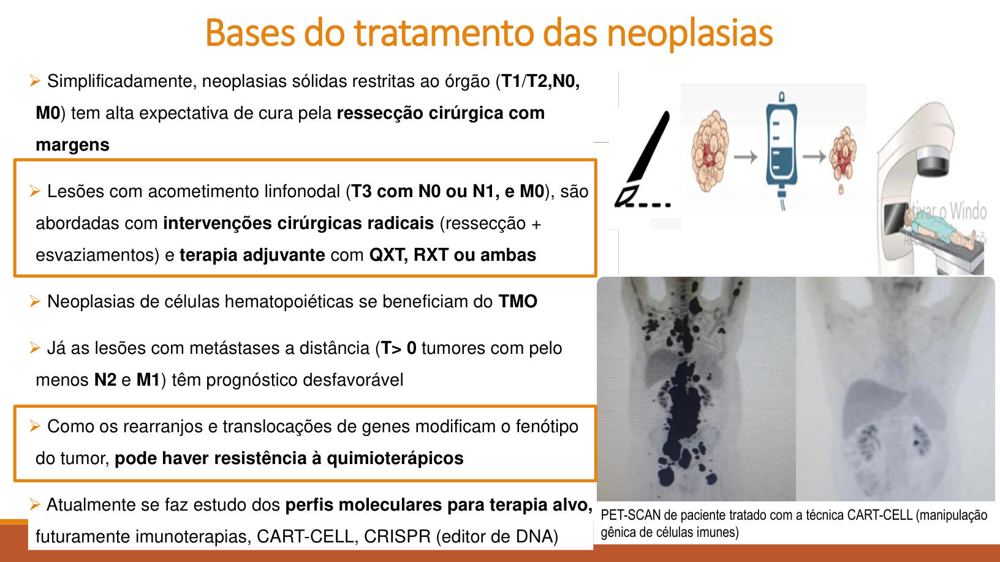
Epidemiologia do câncer
Incidência x mortalidade no mundo
Primeiro, não confunda os conceitos: incidência = quantos casos novos; mortalidade = quantos morrem. São coisas diferentes e mudam a interpretação. Há ~20 milhões de casos novos em 2024 (ambos os sexos, no mundo), com aumento de ~50% entre 2012 e 2022 (de 13 para 20 milhões) — justificado pela maior longevidade e maior exposição a carcinógenos. A faixa etária mais acometida é a adulta, sobretudo 60+. Há diferença geográfica de incidência e mortalidade (exposição a carcinógenos, estilo de vida e acesso ao diagnóstico).
Câncer de pele e melanoma
A pele é o maior órgão do corpo e concentra a maior quantidade de neoplasias — porém é a de menor mortalidade. Por isso o câncer de pele costuma sair das estimativas (descreve-se "exceto pele não-melanoma"): se entrasse na contagem por número, lideraria a incidência. O melanoma tem muita fama porque mata, mas representa menos de 3% de todos os cânceres de pele — agressivo, porém minoritário em frequência.
Câncer no Brasil (INCA)
O Brasil acompanha os dados mundiais de incidência dos principais cânceres:
- Homens (top 3)
- Próstata, colorretal e pulmão — acompanham o mundo.
- Mulheres (top 3)
- Mama, colorretal e colo do útero. O colo do útero persiste alto no Brasil (em outros países está mais abaixo, em torno do 5º lugar).
As maiores taxas estão no Sudeste/São Paulo (estilo de vida, exposição a carcinógenos). As estimativas epidemiológicas são calculadas por 100 mil habitantes — independem do tamanho absoluto da população, são proporcionais. O recado do professor: alta incidência não precisa significar alta mortalidade; com diagnóstico precoce, pode-se ter incidência alta e mortalidade baixa (no Sudeste a mortalidade por câncer de colo é menor — ~5/100 mil — do que no Norte — ~10/100 mil em 2020).
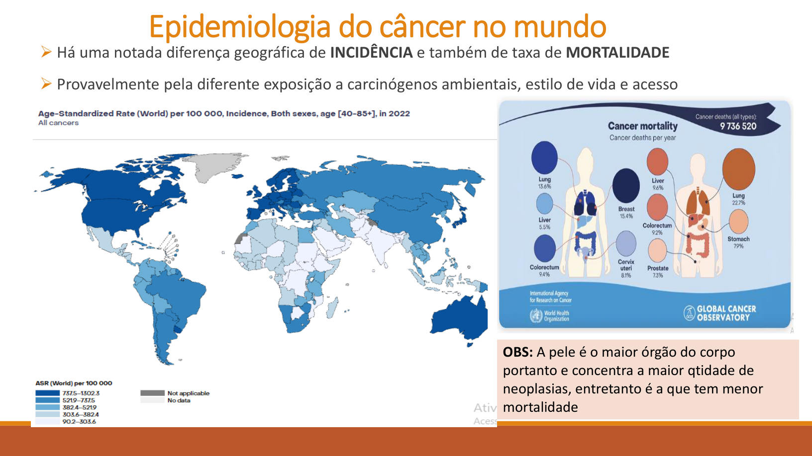
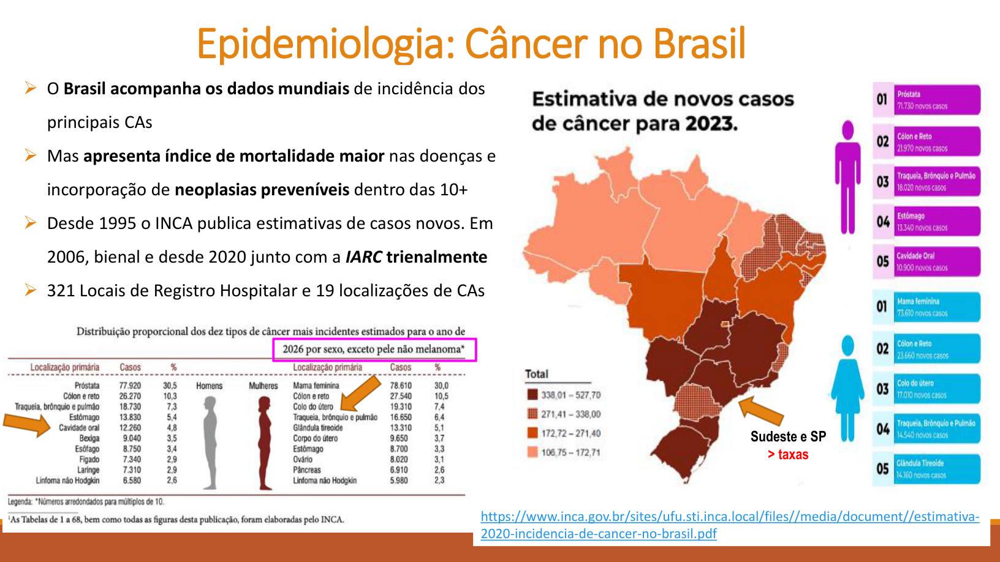
Exemplo clínico integrador
Exemplo clínico
Maria dos Anjos, 54 anos, parda, casada, comerciante, natural de Salvador (BA), mora em São Paulo há 30 anos. Retorna à UBS após 6 meses sem avaliação. Nos últimos 5 meses refere cansaço e dificuldade para tarefas do dia a dia (varrer o chão, subir ladeira), desânimo, perda não intencional de 6 kg no último mês (sem dieta), insônia e dor em região axilar direita, onde teve uma "íngua" há 1 mês. Hipertensa em uso de losartana; etilismo social desde os 20 anos; cessou tabagismo há 10 anos (fumou por 20). G2P2A0, menarca aos 12, menopausa aos 50. Histórico familiar: mãe falecida por câncer de mama.
Exame: à palpação mamária, no quadrante lateral superior (QSE) próximo à aréola, nódulo de ~1,5 cm, irregular, fixo, indolor, com retração mamilar (como se puxasse o tecido para dentro). À palpação axilar, linfonodomegalia à direita, porém de contornos regulares e móvel — características muito mais de linfonodo reativo do que de metástase (lembre: nem todo linfonodo aumentado é metástase). Ela traz o resultado de uma biópsia feita há 6 meses (após mamografia alterada).
Laudo (macro + micro): 5 fragmentos cilíndricos (menor 1,2 cm, maior 2,0 cm × 0,2 cm). Resultado: carcinoma ductal in situ da mama, padrão histológico cribriforme, grau 2 nuclear e celular, moderadamente diferenciado.
Raciocínio das perguntas do caso:
- 1) Grupo de patologias: processo geral = neoplasia; específico = neoplasia maligna.
- 2) HD final e estadiamento: diante do laudo (carcinoma in situ) e das características (tamanho ~1,5 cm e linfonodo reativo, não metastático), a HD é carcinoma ductal in situ, com estadiamento T0 N0 M0 → estádio 0. O nódulo clinicamente palpável e até maior que 2 cm não muda o estádio enquanto a MB estiver preservada (a regra de 2 cm é para T1; in situ é T0/Tis).
- 3) Prognóstico: bom — carcinoma in situ tem ~100% de sobrevida em 5 anos. Conduta cirúrgica (na mama, p. ex., quadrantectomia com boa margem), muitas vezes sem necessidade de complemento. Observação: ter engravidado é, inclusive, fator protetor para câncer de mama.
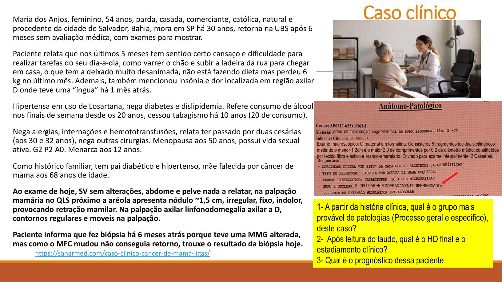
Conexões
Esta aula amarra os conceitos das aulas anteriores. Na Aula 01, os fundamentos de adaptação e crescimento celular (hiperplasia, metaplasia, displasia) reaparecem aqui como lesões precursoras — metaplasia/displasia brônquica e esofágica, hiperplasia/displasia endometrial — e a displasia (com pleomorfismo e cariomegalia, mas focal e por terços) é o passo imediatamente anterior ao carcinoma in situ, em que a atipia toma todo o epitélio.
Ainda na Aula 01 você aprendeu a diferenciar neoplasia benigna de maligna e a gradação histológica (G1 bem diferenciado a G4 indiferenciado); e na Aula 02, os métodos diagnósticos e a nomenclatura. Esta aula completa o quadro: a gradação avalia a diferenciação celular, enquanto o estadiamento TNM avalia a extensão da doença — e ambos, juntos, definem prognóstico e conduta. A cápsula conjuntiva do tumor benigno (vista na Aula 02) não deve ser confundida com a membrana basal, cuja ruptura define a invasão no maligno. E a invasão local + metástase, patognomônicas de malignidade, são exatamente o que separa, na prática, os dois grupos estudados na aula anterior.
- → Hallmarks do câncer: proliferação sustentada, neoangiogênese, evasão imune, invasão e imortalidade (50% por mutação de p53). Tumor + microambiente = progressão.
- → Evolução clonal = seleção darwiniana de subclones heterogêneos; 1 g de tumor ≈ 1 bilhão (10⁹) de células.
- → In situ respeita a membrana basal (colágeno IV); invasão = MMP-2/MMP-9, colagenases/elastases degradam a MB e inibem e-caderina. NÃO confundir MB com cápsula do tumor benigno.
- → Neoangiogênese por VEGF/FGF/PDGF gera neovasos tortuosos e frágeis (microtrombos, hemorragia, necrose); HIF na hipóxia; alvo de sunitinibe e bevacizumabe.
- → Metástase (tumor secundário, fisicamente separado) é patognomônica de malignidade; depende da EMT. Vias: implantação (ovário→peritônio), linfática (carcinomas, linfonodo sentinela) e hematogênica (sarcomas, fígado/pulmão). Solo-semente: próstata→osso, gástrico→fígado.
- → TNM (UICC): T0/Tis (in situ) a T4 (além do órgão); N0–N3/NX; M0/M1. Soma = estádio 0–IV. In situ = estádio 0 (~100% sobrevida 5a); estádio IV (~22%). Adjuvância (pós) x neoadjuvância (pré).
- → Curso clínico: efeitos locais (compressão, obstrução, hemorragia, necrose, perfuração), efeito de Warburg (glicólise anaeróbia, menos ATP) e caquexia (perda >5% em ~1 mês, TNF-alfa, sarcopenia; mais precoce em TGI/CCP).
- → Síndromes paraneoplásicas (Cushing, hipercalcemia, acantose nigricans, CIVD); 95% esporádicos x 5% hereditários (BRCA→mama, Li-Fraumeni→p53, Cowden→PTEN, retinoblastoma); biomarcadores (CEA, AFP-fígado, PSA-próstata, CA-125-ovário, CA-19.9-pâncreas).
Displasia, Benigna x Maligna, Graduação
Atipias citológicas (decorar):
- Cariomegalia — núcleo aumentado, altera relação núcleo/citoplasma
- Hipercromasia — núcleo escuro / cromatina grosseira e aglomerada
- Pleomorfismo — variação de tamanho e forma (celular e nuclear)
- Perda de polaridade — desorganização tecidual
- Mitoses atípicas / bizarras — metáfases/anáfases tripolares (crescimento rápido)
- Nucléolos aumentados em tamanho e número
| Neo BENIGNA | Neo MALIGNA | |
|---|---|---|
| Crescimento | Lento, expansivo, circunscrito | Rápido, infiltrativo, irregular |
| Aspecto | Semelhante ao tecido de origem (bem diferenciado) | Perda de diferenciação (desdiferenciação) |
| Atipias | Ausentes | Presentes (pleomorfismo, hipercromasia, cariomegalia) |
| Mitoses | Baixa taxa | Alta + mitoses bizarras |
| Cápsula | Cápsula/pseudocápsula (vantagem cirúrgica — "pula" na divulsão) | Sem cápsula; aderente, espiculado, ulcerado |
| Invasão local | Não | Sim |
| Metástase | Não | Sim (= câncer) |
| Necrose | Ausente | Presente |
5 critérios histopatológicos de classificação benigna x maligna: 1) atipias celulares · 2) grau de diferenciação · 3) taxa de crescimento · 4) invasão local · 5) capacidade de metástase.
Graduação histológica (valor prognóstico):
- Quanto mais bem diferenciado → mais parecido com tecido de origem, mantém função, melhor prognóstico
- Quanto mais indiferenciado → anaplasia, perda de função, maior impacto sistêmico
- Considera anisocitose (variação de células) e anisocariose (variação de núcleos)
Diagnóstico (Biópsia/Citologia) e Nomenclatura
| Biópsia INCISIONAL | Biópsia EXCISIONAL | |
|---|---|---|
| O que remove | Fragmento (parte da lesão) | Lesão inteira |
| Indicação | Lesões grandes / suspeita de MALIGNIDADE | Lesões pequenas / suspeita de BENIGNIDADE |
| Objetivo | Só diagnóstico (quem trata câncer é o oncologista) | Diagnóstico + terapêutico (já retira tudo) |
Valores e técnica que o professor cobrou:
- Fixador: Formol (formalina) 10% — NÃO soro, NÃO álcool
- Volume do fixador: 10x maior que a peça
- Margens: marcadas com tinta Nanquim (preta, não sai) → laudo informa margens livres ou comprometidas
- Coloração de rotina: HE (hematoxilina-eosina, ~98% dos casos)
- Colorações especiais: tricrômico (colágeno), Verhoeff/Weigert (elásticas), prata (melanina/neural)
- Imuno-histoquímica (cora em marrom): citoqueratina = origem epitelial; usada em tumores indiferenciados/metastáticos para achar a origem
| Origem do tecido | Benigno | Maligno |
|---|---|---|
| Mesenquimal (geral) | -oma | -sarcoma |
| Epitelial (geral) | -oma | carcinoma |
| Tecido adiposo | Lipoma | Lipossarcoma |
| Osso | Osteoma | Osteossarcoma |
| Músculo liso | Leiomioma | Leiomiossarcoma |
| Músculo esquelético | Rabdomioma | Rabdomiossarcoma |
| Cartilagem | Condroma | Condrossarcoma |
| Glândula (epitélio) | Adenoma | Adenocarcinoma |
3 critérios OMS de nomenclatura: I) comportamento clínico (benigno/maligno) · II) critério histomorfológico (aspecto microscópico/arquitetura) · III) origem da neoplasia (histogenética — o principal).
Pode haver tumores mistos (2 tecidos da mesma origem, ex.: adenoma pleomórfico de glândula salivar = células ductais + mioepiteliais).
Metástase, TNM, Clínica e Epidemiologia
In situ → invasivo: célula ultrapassa a membrana basal (colágeno tipo IV). Secreta colagenases/elastases e metaloproteinases MMP-2 e MMP-9; perde coesão (inibe E-caderina).
| Via | Característica | Exemplo / Típico de |
|---|---|---|
| 1) Implantação | Cavidades corporais | CA ovário → peritônio (carcinomatose) |
| 2) Linfática | Mais comum; rede linfática regional | CARCINOMAS (epiteliais). Mama → linfonodo axilar |
| 3) Hematogênica | Mais por VEIAS que artérias | SARCOMAS. Alvos: fígado e pulmão |
- Linfonodo sentinela = 1º linfonodo no trajeto do tumor; biópsia indicada em CA de mama e melanoma (define esvaziamento)
- Linfadenomegalia ≠ metástase — pode ser linfadenite reativa
- Teoria solo-semente: o fenótipo determina o sítio secundário. Ex.: próstata → osso; gástrico → fígado
- Órgãos-alvo hematogênicos: fígado (drenagem portal) e pulmão (veia cava)
Estadiamento TNM (UICC):
| Parâmetro | Significa | Escores |
|---|---|---|
| T | Tumor primário (tamanho) | Tis (in situ); T1–T3 crescentes (T1 ≤ 2 cm); T4 além do órgão |
| N | Linfonodos regionais | N0 sem; N1–N3 conforme número/local; NX não avaliável |
| M | Metástase sistêmica | M0 sem; M1 com |
- T + N + M → define o estádio e o prognóstico
- Melhor prognóstico: bem diferenciado + in situ (T1/T2, N0, M0 → alta chance de cura por cirurgia com margens)
- Sobrevida de referência: 5 anos
Características clínicas / comprometimento sistêmico:
- Efeito de Warburg: glicólise anaeróbia mesmo com O₂ (metabolismo menos eficiente)
- Caquexia: perda de tecido adiposo e massa magra; perda ponderal não intencional > 5%; ~80% dos oncológicos; ligada a TNF-α; pior em TGI e cabeça/pescoço
- Síndromes paraneoplásicas: sintomas NÃO explicados pela disseminação. Ex.: Cushing, hipercalcemia, acantose nigricans, síndromes miastênicas, hipercoagulabilidade (CIVD)
Biomarcadores (decorar par antígeno → câncer):
- PSA → próstata
- AFP (alfa-fetoproteína) → fígado
- CA-125 → ovário
- CA-19.9 → pâncreas
- CEA (antígeno carcinoembrionário) → marcador colorretal/digestivo (oncofetal)
Tratamento: cirurgia com margens (lesões restritas) · adjuvância (QXT/RXT após cirurgia) · neoadjuvância (antes, para reduzir/estabilizar tumor irressecável) · TMO (hematológicos) · terapia-alvo, imunoterapia, CAR-T, CRISPR.
| Brasil (INCA) | HOMENS | MULHERES |
|---|---|---|
| Mais incidentes | Próstata · colorretal · pulmão | Mama · colorretal · colo do útero |
- Pele = maior nº de neoplasias (maior órgão), mas menor mortalidade
- Diagnóstico precoce reduz mortalidade (ex.: desigualdade territorial no CA de colo de útero)